数值热学表述
引言
3DEC 的热学选项可模拟材料中的瞬态热传导，并计算热致位移和应力。该选项具有以下具体特点：
- 任一力学模型都可与热学模型配合使用。
- 可指定温度边界条件、热流边界条件、对流边界条件和绝热边界条件。
- 热源可作为点源或体源插入材料中。这些热源可按指数规律随时间衰减。
- 显式与隐式求解算法均可用。
- 热学选项通过热膨胀系数实现向力学应力计算的单向耦合。
- 可通过 FISH 访问温度。
- 可实现裂隙中流体流动与热学逻辑之间的耦合。
热学选项还允许对充满流动流体的裂隙中的瞬态热对流进行建模。在本版本程序中，流体热-力耦合时不考虑流体的热膨胀。
本节介绍热学表述以及用于热学分析的 3DEC 输入命令。热传导在 热传导（Heat Conduction） 一节中讨论；热对流在 热对流（Heat Convection） 一节中评述。文中还给出了求解热学问题的建议以及若干验证问题。可参照这些算例来创建用于热学分析以及热-应力耦合或热-流体流动耦合分析的 3DEC 模型。
热传导
引言
固体热传导逻辑适用于可变形块体（对刚性块体不激活）。默认情况下对流关闭，热量通过插值方式跨块体传导（此时热流“看不到”裂隙）。也可以激活流体-热耦合（该主题在热对流（Heat Convection）一节中讨论）。
数学模型说明
3DEC 中热传导涉及的变量为温度以及热通量的三个分量。这些变量通过能量平衡方程和由傅里叶热传导定律导出的输运定律相联系。把傅里叶定律代入能量平衡方程，即得到热传导微分方程；在给定特定边界条件与初始条件后，可针对特定几何与物性求解该方程。热体积应变被引入增量力学本构律，以计入热-力耦合。
约定与定义
作为记号约定，符号 \(a_i\) 表示矢量 [ \(a\) ] 在笛卡尔参考坐标系中的第 \(i\) 个分量；\(A_{ij}\) 表示张量 [ \(A\) ] 的 (\(i, j\)) 分量。此外，用 \(f_{,i}\) 表示 \(f\) 对 \(x_i\) 的偏导数。（\(f\) 可以是标量变量或矢量的分量。）
爱因斯坦求和约定仅适用于指标 \(i\)、\(j\)、\(k\)，在涉及空间维度的分量时它们取 1、2、3。在矩阵方程中使用时，这些指标可取任意值。
采用 SI 单位来说明参数和变量的量纲。换算为其他单位制的方法见 热学分析的单位制（Systems of Units for Thermal Analysis）。
下列无量纲数在表征瞬态热传导时很有用。
特征长度：
热扩散率：
其中：
\(k\) 为热导率；
\(\rho\) 为密度；以及
\(C_v\) 为定容比热。
特征时间：
能量平衡方程
能量平衡的微分表达式具有以下形式
式中，\(q_i\) 为热通量矢量 [\(W/m\)2]，\(q_v\) 为体积热源强度 [\(W/m\)3]，\(\zeta\) 为单位体积储存的热量 [\(J/m\)3]。一般而言，温度变化可由储能变化和体积应变 \(\epsilon\) 共同引起。联系这些参数的热本构定律可表示为
其中 \(M_{th}\) 和 \(\beta_{th}\) 为材料常数，\(T\) 为温度。
在 3DEC 中，我们考虑该定律的一个特例，即 \(\beta_{th}\) = 0、\(M_{th}\) = \(1 \over {\rho C_v}\)。\(\rho\) 为介质的质量密度，单位为 [\(kg/m\)3]；\(C_v\) 为定容比热，单位为 [\(J/kg\) °\(C\)]。此处的假定是应变变化对温度的影响可忽略不计——对于涉及固体和液体的准静力力学问题，这是一个合理的假定。据此，可写出
注意，对于几乎所有固体和液体，定压比热与定容比热基本相同。因此，\(C_v\) 和 \(C_p\) 可以互换使用。
输运定律
定义热流矢量与温度梯度之间关系的基本定律是傅里叶定律。对于静止、均质、各向同性的固体，该本构定律的形式为
其中 \(T\) 为温度 [°C]，\(k\) 为热导率，单位为 [\(W/m °C\)]。
边界条件与初始条件
将式 (8) 代入式 (7) 中的 \(q_i\)，可得热传导微分方程。初始条件对应于给定的温度场。边界条件一般用温度或热流矢量垂直于边界的分量来表示。在本版本的 3DEC 中考虑四类条件，分别对应于：(1) 给定温度；(2) 给定热流垂直于边界的分量；(3) 对流边界；(4) 绝热（隔热）边界。
在 3DEC 中，对流边界条件的形式为
式中，\(q_n\) 为热通量沿外法线方向在边界上的分量，\(h\) 为对流传热系数 [\(W/m\)2 °\(C\)]，\(T\) 为边界表面温度，\(T_e\) 为周围流体温度 [°C]。注意，在 3DEC 所用的数值格式中，边界默认为绝热。
力学耦合——热应变
求解热应力问题需要重新表述增量应力-应变关系，做法是从总应变增量中减去由温度变化引起的那部分。由于各向同性材料中自由热膨胀不产生角变形，剪切应变增量不受影响。与温度增量 \(\Delta T\) 对应的自由膨胀所产生的热应变增量具有如下形式
其中 \(\alpha t\) [1/ °\(C\)] 为线热膨胀系数，\(\delta_{ij}\) 为克罗内克 δ。
运动微分方程以及应变率-速度关系基于力学考虑，在热力学中保持不变。
数值公式
3DEC 中采用基于介质离散为网格单元（四面体）的有限差分方法来求解能量平衡方程（式 (7)）和傅里叶定律（式 (8)）。该数值格式建立在能量平衡方程的节点表述基础之上。这种表述与（3DEC 理论与背景（3DEC Theory and Background） 一节中给出的）导出牛顿定律节点形式的力学表述等价。它通过将速度矢量、应力张量和应变率张量分别替换为温度、热流矢量和温度梯度而得到。所得常微分方程组采用两种时间离散方式求解，分别对应于显式和隐式表述。主要结果概述如下。
空间导数的有限差分近似
按约定，四面体的节点局部编号为 1 至 4，面 \(n\) 与节点 \(n\) 相对，上标（\(f\)）表示相应变量在面 \(f\) 上的值。
假定四面体内温度按线性变化；用高斯散度定理把温度梯度表示为节点温度值后，可写为
其中 [\(n\)]\(^(l)\) 为面 \(l\) 的外向单位法向矢量，\(S\) 为该面的表面积，\(V\) 为四面体体积。
能量平衡方程的节点形式
能量平衡方程 (8) 可表示为
其中
它相当于力学节点表述中所用的瞬态“体力”。首先考虑单个四面体。按此类比，与该四面体的热流和体力相平衡的节点热量 \(Q_e^n [W]\)（\(n\) = 1,4）可表示为
其中
以及
原则上，能量平衡方程的节点形式是这样建立的：要求在每个全局节点处，与该节点相连的所有四面体提供的等效节点热量（\(-Q_e^n\)）与所施加边界通量及热源的节点贡献（\(Q_w^n\)）之和为零。
式 (15) 中四面体热通量矢量的各分量通过输运定律（见 式 (8)）与温度梯度相联系。反过来，温度梯度的各分量可用 式 (11) 由四面体的节点温度表示。
为节省计算机时间，3DEC 中采用网格单元表述。对于某个网格单元的每个节点 \(n\)，将该单元所有在该节点相交的四面体的贡献求和得到 \(Q_z^n\)，并在有两个叠加层时除以 2。组装局部单元矩阵 [\(M\)]，把节点单元值 \(Q_z^n\) 与节点单元温度 \(T^n\)（\(n\) = 1,4）联系起来。这些矩阵是对称的，因此只需计算 10 个分量，在计算开始时保存，并在大应变模式下每 10 步更新一次。按单元矩阵的定义，有
其中 [\(T\)] 为网格单元节点温度的局部矢量。
反过来，全局节点值 \(Q_T^n\) 由各网格单元的贡献叠加得到。为书写简便，对每个全局节点 \(n\) 写出
其中 [\(C\)] 为整体矩阵，而在这一语境下 [\(T\)] 为节点温度的全局矢量。
回到前述讨论，可写为
其中为书写简便，用 \(\sum\) 符号表示在该节点相交的所有网格单元对全局节点 \(n\) 的贡献之和。将式 (14) 代入式 (19)，经若干推导可得
其中 \(Q_T^n\) 是式 (18) 所定义的节点温度的函数，\(\sum Q_{app}^n\) 是所施加的体热源、边界热流和点源的已知贡献，定义为
式 (20) 是节点 \(n\) 处能量平衡方程的节点形式；右端项 \(Q_T^n + \sum Q_{app}^n\) 称为“不平衡热量”。离散中涉及的每个全局节点都有一个这样的表达式，它们共同构成一个常微分方程组，3DEC 用显式和隐式有限差分格式求解该方程组。各格式的适用范围在下文讨论。
显式有限差分公式
在显式表述中，假定节点温度在一个时间区间 \(\Delta t\) 内线性变化：式 (20) 左端的导数用前向有限差分表示，不平衡热量在时刻 \(t\) 处计算。从初始温度场出发，只要温度未被固定，就用下式更新各增量时刻的节点温度
其中
以及
只有时间步长保持低于某一限值，显式方案才能达到数值稳定。
稳定性准则
为推导稳定性判据，考虑如下情形：在由若干网格单元组成的集合体中，某节点 \(n\) 从零初始状态获得温度扰动 \(T\)0。利用式 (18)，得到
若节点 \(n\) 属于对流边界，则有
其中 \(D_{nn}\) 用于表示节点 \(n\) 处整体对流项中的温度系数。经过一个热学时间步后，节点 \(n\) 的新温度为（见式 (22) 至式 (24)）
为防止对相继的 \(\Delta t\) 反复计算时温度出现正负交替，上述关系中 \(T\)0 的系数必须为正。该要求意味着
3DEC 中采用的时步取式 (1.28) 右端项的节点最小值乘以 0.8 的安全系数。
为评估有关参数的影响，牢记以下临界时间步长表示很有帮助。若 \(L_c\) 为最小四面体特征长度，可写出如下形式的表达式：
其中 \(\Delta t_cr\) 为临界时步，\(\kappa\)、\(h\)、\(\rho\) 和 \(C_v\) 已在前文 数学模型描述（Mathematical Model Description） 中定义，\(m\) 为大于 1 的常数，取决于介质的几何离散方式（例如立方体规则离散时 \(m\) = 6——见 Karlekar 和 Desmond 1982）。
式 (29) 中的临界时步相当于扩散“前沿”传遍整个四面体所需特征时间的一种度量。若要估计前沿传遍某一特定区域所需的时间，可采用类似的表达式，只需把 \(L_c\) 解释为所考虑区域的特征长度。考虑无对流的情况。取区域与四面体特征时间之比可以看出，模拟扩散过程传遍该区域所需的步数与区域和四面体特征长度平方之比成正比。该步数可能非常大，以致仅使用显式方法会变得难以承受。
另一方面，这种一阶方法的优点是，计算得到的时步通常足够小，能够准确跟踪节点温度的波动。
隐式有限差分格式
为保证稳定性而要求 \(\Delta t\) 取值受限，有时会导致时步极小——量级为不足一秒，尤其在涉及多层瞬态导热时。隐式格式消除了这一限制，但需要在每个时步求解联立方程。
3DEC 中的隐式格式采用 Crank-Nicolson 方法，其中假定节点温度在时间区间 \(\Delta t\) 内按二次规律变化。该方法用对应半个时步的中心差分格式表示 式 (20) 中的导数 \(dT /dt\)，而通过取 \(t\) 与 \(t\) + \(\Delta t\) 处的平均值来计算不平衡热量。在该格式中，有
其中
以及
由定义 式 (18)，可写出
以及
利用式 (22)，最后一个表达式变为
将式 (35) 代入式 (31) 后，利用式 (33) 可得
最后，重新合并各项：
为书写简便，把已知矩阵 \([A]\) 与矢量 \([b_{<t>}]\) 定义为
以及
采用该约定，可将 式 (37) 写成如下形式
对网格中涉及的每个节点都可写出这样的方程。所得方程组在 3DEC 中采用雅可比迭代法求解。该方法利用以下递推关系计算第 \(r\) + 1 次迭代、节点 \(n\) 处的温度增量，
式中，爱因斯坦求和约定仅对 \(j\) 指标适用。利用 [\(A\)] 的定义 式 (38)，式 (41) 变为
初始近似值的选择使其满足
因此，第一次近似 \(\Delta T_{<t>}^{n <1>}\) 用与显式格式相同的公式除以 \(\left( 1 - {{\chi^n}\over 2} C_{nn}\right)\) 计算得出。（注意在 3DEC 中，与温度相关的边界条件（包含在 \(b_n\) 中）在隐式迭代过程中会被更新。）
在 3DEC 中，迭代次数最少为 3、最多为 500，判定收敛的准则具有以下形式
时步的取值必须同时兼顾隐式格式的收敛性与精度。虽然 Crank-Nicolson 方法对 \(\Delta t\) 的所有正值都稳定（无对流时），但除非矩阵 [\(A\)] 严格对角占优，Jacobi 方法的收敛性并不能无条件保证——即当
其中 1 ≤ \(i\) ≤ \(n\)（见 Dahlquist 和 Bjorck 1974）。根据 \(A_{nj}\) 的定义式 (38) 以及 \(\chi^n\) 的式 (24)，当 \(\Delta t\) 足够小时，该充分条件总能满足。若雅可比方法未收敛，程序会给出错误信息。此时必须减小隐式时步的量值，或改用显式方法。（可将显式时步作为下限。）
此外，虽然隐式方法具有二阶精度，但选择合适的时步可能仍需一定经验。实际上，其时步必须远小于任意节点温度波动的波长。通常在计算前期或扰动阶段采用显式方法，而在模拟的其余阶段更倾向于采用隐式方法。（也可把隐式方法与显式时步取值结合使用，以获得更高精度。）
在 3DEC 中选择隐式方法时，必须考虑计算时间和计算机内存这两个因素。在隐式方法中，每个时步都要解一组方程，至少需要三次迭代。一次迭代步骤所需的计算量大致等于显式格式中一个时步所需的计算量。此外，迭代过程中必须存储中间值，因而需要分配比显式格式更多的内存。不过，隐式方法通常允许大得多的时步，或可获得更高的精度，这些不便往往能被大大抵消。
热-应力耦合
在瞬态模拟过程中的任何时刻，都可把热传递与热-应力计算耦合起来。这种耦合只在一个方向上进行（即温度可引起应力变化，但由施加力引起的物体力学变化不会导致温度变化）。这一限制在此处并不被认为有重大影响，因为准静力力学问题的能量变化通常可忽略不计。三角形网格单元的应力变化由下式给出（来自式 (10)）
上述做法假定每个三角形网格单元内的温度恒定，该温度由周围网格点插值得到。在施加本构定律之前，将该应力加到网格单元的应力状态上。
通过 FISH 访问温度和属性值，也可将力学属性设为温度变化的函数。
求解纯热学问题与热-力问题
3DEC 能够进行纯热学分析以及热-力耦合和热-流体流动耦合分析。本节介绍各种耦合相互作用的形式。在所有情况下，命令流程的第一步都是给出 model config thermal 命令，以便为热学计算分配额外内存。然后必须在显式和隐式热学算法之间作出选择。默认情况下将选用显式算法，但在纯热学计算或耦合计算的任何阶段，都可用命令 block thermal implicit on 或 block thermal implicit off 启用或停用隐式计算模式。在显式模式下，热学时间步会自动计算，但可用 model thermal timestep fix 命令选取更小的时步。在隐式模式下，时步量值必须由用户指定，通过给出 model thermal timestep fix 命令来实现。凡导热的网格单元都必须指定热学模型和属性，还必须指定密度。然后指定初始条件和边界条件，完成热学问题的设置。例如，热流边界条件通过范围指定到热学域的边界上。在热-力模拟中，热学域由具有非空热学模型的网格单元集合定义。
纯热分析
命令 model mechanical active off（若指定了 model configure fluid，则为 model fluid active off）用于请求仅进行热学计算。随后可给出 model step（或 model cycle）命令，执行指定数目的热学步。要在达到某一热学时间时停止计算，可给出 model solve thermal time 命令。
各向同性导热系数与比热这两个热学属性分别用 block zone thermal property conductivity 和 block zone thermal property specific-heat 命令赋值。
只需给出 model solve 命令即可获得稳态热学解。默认情况下，热学计算会一直进行，直到模型所有网格点处的不平衡热流与所施加热流大小之比降到 10−5 以下为止。对大多数热学分析而言，该限制比值可产生稳态热流条件。可用 model solve thermal ratio 命令调整该比值。
给出 model step 或 model solve 时，屏幕上会打印热学时间步和总热学时间。时步以及其他热学计算模式信息可用 model thermal list 命令获取。
热-力分析
热学选项可与力学计算结合，用 3DEC 进行热-力分析。热学计算的所有功能（包括瞬态和稳态传热，以及用显式或隐式算法求热学解）在热-力计算中均可使用。
热-力耦合通过温度变化对网格单元体积变化的影响实现（见 式 (10)）。线热膨胀系数用 block zone thermal property expansion 命令赋值。
热-力分析可与 3DEC 中任一内置力学模型配合进行。
进行热-力分析时需考虑两个问题。第一个问题与热过程和力学过程各自的时间尺度不同有关。由于时步对应于信息从一个节点传播到下一节点所需的时间，因此可用其时步表达式来比较时间尺度。
通常，与力学过程相关的时步具有如下形式
其中：
\(K\) = 体积模量；
\(G\) = 剪切模量；
\(\rho\) = 密度；以及
\(L_c\) = 特征长度。
因此，热学时步与力学时步之比可表示为（见式 (29)，假定无对流且 \(m\) = 1）
其中 \(\kappa\) 为热扩散率。对于非金属材料，该属性至多为 10−6 m2/s 的量级。对于岩石和土体，\(\rho\) 约为 103 kg/m3 量级，而 \(K\) + (4/3)\(G\) 约为 1010 N/m2。将这些量级代入式 (46) 可以看出，热学时间尺度与力学时间尺度之比约为 105\(L_c\) 量级。即使 \(L_c\) 为 1 mm 量级，该比值仍然非常大。因此在实际中，与扩散效应相比可认为力学效应瞬时发生。这也是 3DEC 所采用的处理方式：与热学步骤相伴的力学步骤都不关联任何时间。
第二个问题涉及 3DEC 中的热-力耦合。这种耦合只沿一个方向发生：温度变化产生热应变，进而影响应力；而热计算不受所发生的力学变化影响。
在多数建模情形中，初始力学条件对应一种平衡状态，必须在开始耦合分析之前先达到该平衡。例如，若介质为弹性体且需要研究某一热学时刻的热-力响应，可先进行纯热计算直到所需时刻（model thermal active on 与 model mechanical active off）。随后可用 model thermal active off 与 model mechanical active on 命令关闭热计算、开启力学计算。接着可循环至力学平衡，再分析其响应。
对于非线性力学模型（即涉及塑性时），必须更频繁地把热学变化传递给力学模块，以遵循体系的路径相关性。通常，在无量纲热学时间较小时，每个热学步都必须执行一定数量的力学步，使体系能按所涉及的不同时间尺度进行调整。在无量纲热学时间较大时，若体系趋于热学平衡，则可以连续执行若干热学时间步，而不会显著扰动介质的力学状态。相应的数值模拟可通过在仅热学模式和仅力学模式之间交替来人工控制。
第三种做法是：在力学模块与热学模块都开启（model thermal active on 与 model mechanical active on）时使用 model step 命令。该选项下每个热学步执行一个力学步。这里假定热学步足够小，每执行一个热学步后一个力学步就足以使系统重新达到力学平衡。可查阅“热分析的输入说明（Input Instructions for Thermal Analysis）”一节以获取可用命令选项的完整清单。
热对流
引言
在对流逻辑中，假定流体流动只发生在裂隙内，裂隙被流体饱和，而岩石基质对流体流动是不可渗透的（3DEC 的处理方式）。热量由流体以对流方式输运，并在流体内部以传导方式输运。如前节所述，热量也可在岩石中以传导方式输运。流体有其自身的温度，通常与岩石的温度不同。裂隙中的流体与接触岩石之间的热传递（流体-热学耦合）可按牛顿冷却定律进行。流体内部的热传递以及与岩石内部热传递的耦合逻辑，将在下一节中介绍。
数学模型说明
流动平面中的热对流由以下方程描述。热量在裂隙流体中按傅里叶定律以传导方式输运：
其中 \(q^T_f\) 为流体中的比热流，\(k^T_f\) 为流体热导率。 流体的能量平衡方程满足下式
式中，\(\rho f C_f\) 为流体密度与比热之积，\(q^f\) 为流体比流量。\(A_f\) 为单位流体体积的接触面积，\(h\) 为流体/岩石传热系数，\(T_f\) 与 \(T_s\) 分别为流体和固体块体的温度。
对于固体块体，忽略流体流动；热量输运遵循傅里叶定律：
其中 \(q^T\) 为比热流，\(k^T\) 为岩石热导率。能量平衡为
式中，\(\rho_s C_s\) 为固体密度与比热之积，\(A_s\) 为单位固体体积的接触面积（从流体一侧看，两侧均有接触：\(A_s^+\)、\(A_s^-\)，且 \(A_f\) = \(A_s^+ + A_s^-\)）。
本项开发中假定热学与流体流动之间的耦合较弱（即与其他效应相比，可忽略流体热膨胀所引起的流体压力）。此外，目前的表述没有直接计入流体属性（黏度、密度）对温度的依赖关系。最后，本项开发的热-力耦合中不考虑流体热膨胀。
数值公式
固体块体中热传导的逻辑在 热传导（Heat Conduction） 一节中介绍。这里重点讨论裂隙中热对流的实现。
裂隙流体热学方程的数值实现采用显式有限体积格式。流体中热传导的实现采用与求解裂隙中流动输运和流体质量守恒方程相似的格式（这些方程形式相似）。该数值技术基于将流动平面离散为三角形网格单元，并假定单元内温度线性变化。流动平面内的数值表述沿用 FLAC 热学格式（针对一个叠加层）的思路，关于该技术的说明请参阅 FLAC 手册 可选功能 卷中的 热学选项 一节。此处的不同之处在于，在计算热学步的新温度之前，节点处的不平衡热流中还加入了另外两项贡献。
第一项计入热对流，按流动网格单元计算。在每个热学时间步，对面积为 \(A\) 的三角形网格单元，利用流动计算得到的流体比流量 \(Q^f\) 以及该单元的温度梯度，计算形如 \(\rho_f C_f Q^f \cdot \nabla T_f A\) 的热源项。（符号 \(Q^f\) 表示沿裂隙厚度积分的热流；温度梯度由节点温度利用高斯散度定理求得。）该热源项被均分为三份，每个网格单元的每个节点处各加入一份到不平衡热流中。
第二项计入裂隙流体与岩石之间按牛顿冷却定律发生的热交换，按流动节点计算。其原理如下。设 \(S\) 为流动平面中分配给该节点的节点面积，流动节点处的流体温度为 \(T_f\)，岩石温度一侧为 \(T^+_s\)、另一侧为 \(T^-_s\)。对流体而言，在每个热学时间步把表面相互作用项 \(h(T_f - T^+_s)S + h(T_f - T^-_s)S\) 加入流动节点处的不平衡热流。贡献 \(h(T_f - T^+_s)S\) 以相反的符号分配给一侧接触块体面的节点，另一侧对 \(h(T_f - T^+_s)S\) 作同样处理。然后按标准方法计算该步的新节点温度。
稳定性与精度
求解能量平衡方程 式 (48) 的数值格式的稳定性由两个数控制：网格 Péclet 数 \(P_{eg}\) 和网格 Courant 数 \(C_{rg}\)。当比热 \(C_f\) 均匀且不考虑流体/岩石相互作用时，能量平衡方程可写成如下形式
其中，按定义，
网格 Péclet 数给出对流与导热相对效应的度量，定义为
式中，\(\Delta l\) 为网格尺寸。
网格 Courant 数是衡量在一个热时步 \(\Delta t\) 内流体颗粒在 \(\Delta l\) 上覆盖的对流距离的指标：
例如在一维情况下，经典约束为 \(P_{eg}\) ≤ 2 和 \(C_{rg}\) ≤ 1（参见 Perrochet 和 Berod 1993）。在当前的实现中，显式流体时步和热学时步与传导逻辑中采用的时步相同。因此，程序对网格 Peclet 数没有设定内在限制。不过，不同数值下的精度很可能不同，并会受网格尺寸和时步的影响。
因此，程序所采用的显式时步并非无条件稳定；需要开展更多研究并进行试验，以解决这一问题。对本功能的用户提出一条建议：在着手大型计算之前，先用具有代表性的属性、比流量和计划采用的网格尺寸，在 一维热输运（One-Dimensional Thermal Transport） 一节给出的简单一维模型上运行并检验稳定性。尽管对大多数实际应用而言，流体中传导的热量与对流输运的热量相比很小，但从数值角度看，在模拟中考入传导往往是有利的。若小模型中出现不稳定（见前面对网格 Peclet 数和 Courant 数的稳定性判据），则应减小网格尺寸直至达到稳定。随后需要参照小模型得到的稳定网格尺寸，重新审视大型模型的离散方案。
求解热对流问题
要用 3DEC 进行流体-热耦合计算，必须先选择流体与热学配置，即使用 model configure thermal fluid 命令。选择对流模式（用 block thermal convection on），可使热量在裂缝中通过流体导热和流体流动的对流进行传播。流体的比热与导热系数这两个热学属性分别用 block fluid property specific-heat 和 block fluid property thermal-conductivity 命令赋值。流体的初始温度与热边界条件必须独立于岩石的初始温度与热边界条件赋值。流体温度用 block insitu fluid-temperature 命令在流动平面的节点上初始化。裂缝中可施加三类流体热边界条件，分别对应固定温度（flowknot apply temperature）、表面热通量（flowplane edge apply flux）和节理热源（flowknot apply flux）。
为模拟流体与岩石之间的传热，必须按热传导（Heat Conduction）一节所述方法建立岩石中的热传导问题。此外，可用 block fluid property heat-transfer-coefficient 命令赋予传热系数属性（见应用算例（Application Examples））。有两个命令（flowknot list thermal 与 model fluid list）可分别输出流动平面中节点的温度和流体属性。最后，可通过绘制 / / 生成流体温度等值线图。
下面列出热对流模拟专用的命令清单。（括号中给出 SI 单位。）
热分析的输入说明
3DEC 命令
提供以下命令来运行热学问题。注意，热学选项通过标准力学程序中原有命令的新关键字来调用。命令 model configure thermal 必须是调用任何其他热学命令之前给出的第一条热学命令。
热学分析的单位制
所有热学量都必须以相互配套的单位制给出；程序不进行单位换算。下列各表给出热学参数一致单位制的示例。
| 长度 | m | m | m | 厘米 |
| 密度 | kg/m3 | 103 kg/m3 | 106 kg/m3 | 106 g/cm3 |
| 应力 | Pa | kPa | MPa | bar |
| 温度 | K | K | K | K |
| 时间 | s | s | s | s |
| 比热 | J/(kg K) | 10−3 J/(kg K) | 10−6 J/(kg K) | 10−6 cal/(g K) |
| 热导率 | W/(mK) | W/(mK) | W/(mK) | (cal/s)/cm2 K4 |
| 对流换热系数 | W/(m2 K) | (W/m2 K) | W/(m2 K) | (cal/s)/(cm2 K) |
| 辐射换热系数 | W/(m2 K4) | W/(m2 K4) | W/(m2 K4) | (cal/s)/cm2 K4 |
| 通量强度 | W/m2 | W/m2 | W/m2 | (cal/s)/cm2 |
| 源强度 | W/m3 | W/m3 | W/m3 | (cal/s)/cm3 |
| 衰减常数 s−1 | s−1 | s−1 | s−1 | s-1 |
| 长度 | 英尺 | in |
| 密度 | slugs/ft3 | snails/in3 |
| 应力 | lbf | psi |
| 温度 | R | R |
| 时间 | hr | hr |
| 比热 | (32.17)−1 Btu/(1b R) | (32.17)−1 Btu/(1b R) |
| 热导率 | (Btu/hr)/(ft R) | (Btu/hr)/(in R) |
| 对流传热系数 | (Btu/hr)/(ft2 R) | (Btu/hr)/(in2 R) |
| 辐射传热系数 | (Btu/hr)/(ft2 R4) | (Btu/hr)/(in2 R4) |
| 通量强度 | (Btu/hr)/ft2 | (Btu/hr)/in2 |
| 源强度 | (Btu/hr)/ft3 | (Btu/hr)/in3 |
| 衰减常数 | hr−1 | hr−1 |
其中：
1K = 1.8 R;
1J = 0.239 cal = 9.48 × 10−4 Btu；
1J/kg K = 2.39 × 10−4 btu/1b R;
1W = 1 J/s = 0.239 cal/s = 3.412 Btu/hr;
1W/m K = 0.578 Btu/(ft/hr R); and
1W/m2 K = 0.176 Btu/ft2 hr R.
注意，温度也可用更常用的单位 °C（代替 K）或 °F（代替 R）表示，其中：
Temp(°C) = \(5 \over 9\) * [Temp(°F) − 32]；
Temp(°F) = [1.8 Temp(°C)] + 32;
Temp(°C) = Temp(K) − 273; and
Temp(°F) = Temp(R) − 460.
验证示例
文中给出若干验证问题，以演示 3DEC 的热学模型。这些算例的数据文件位于 “\Options\Thermal” 目录中。
平板中的热传导
一块厚度 \(L\) = 1 m 的平板初始温度为恒定的 0°C。板的一侧暴露于 100°C 的恒定温度，另一侧保持 0°C。该板最终达到平衡状态，热流恒定、温度分布不再变化。
该问题瞬态温度分布的解析解由 Crank（1975）给出，
其中：
\(T\)1 为板一侧面的温度；
\(T\)2 为板另一面的温度；
\(L\) 为板的宽度；
\(t\) 为时间；
\(z\) 为穿过薄板的距离；以及
\(\kappa\) 等于 \(k/(\rho Cp)\)，其中
\(k\) 为热导率；
\(\rho\) 为密度；以及
\(C_p\) 为比热。
当 \(T\)2 = 0 时，解变为
本例中热导率为 1.6 W/m°C，比热为 0.2 J/kg°C，材料质量密度为 1000 kg/m3，温度 \(T\) 为 100°C。
解析解编写为 FISH 函数，以便在选定的热学时刻与数值结果直接比较。这些时刻的解析温度和数值温度结果存储在表格中。
在 3DEC 模型中，板被定义为由 25 个网格单元组成的一列。在 z = 0 的面上施加 100°C 的恒温边界，在 \(z\) = 1 的面上施加 0°C 的恒温边界。模型网格如下图所示。

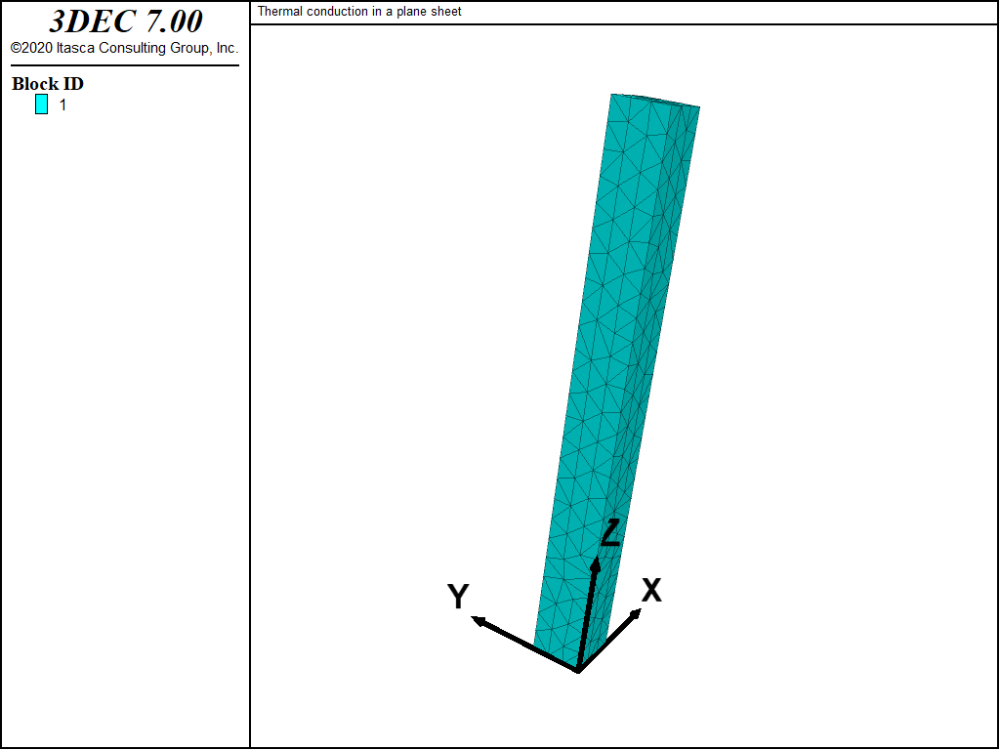
图 1：用于平板导热的 3DEC 网格。
算例 平板中的传导——显式解（Conduction in a Plane Sheet — Explicit Solution） 包含该问题的 3DEC 数据文件。图 2（Figure 2） 给出了显式解在三个热学时刻的解析温度与数值温度对比；图 3（Figure 3） 给出了隐式解的对比。两图中绘制的是归一化温度（\(T/T\)1）随归一化距离（\(z/L\)）的变化，其中表 2、4、6 为温度的解析解，表 1、3、5 为 3DEC 解。显式解的三个热学时刻为 1.455、7.273 和 72.73 秒，隐式解为 1.455、11.45 和 71.45 秒。两种情况下解在最后一个时刻均已达到平衡热学状态。对于两种求解表述，稳态下解析温度与数值温度之差均小于 0.1%。
平板导热——显式解
; 平板中的热传导
; 比较显式与隐式方法
model new
model random 10000
fish automatic-create off
model config thermal
model large-strain on
;
model title
Thermal conduction in a plane sheet
;
; --- FISH 常量 ---
fish def cons
global c_cond = 1.6 ; 热导率
global c_dens = 1000. ; density
global c_sph = 0.2 ; 比热容
global length = 1. ; 壁厚
global t1 = 100. ; 壁面温度，第 1 面
global tabn = -1
global tabe = 0
global overl = 1. / length
global d = c_cond / (c_dens * c_sph)
global dol2 = d * overl * overl
global top = 2. / math.pi
global pi2 = math.pi * math.pi
global n_max = 100 ; 解析解的最大级数项数
global teps = 1.e-5 ; 相对于 1 足够小的数值
end
[cons]
block create brick 0 0.1 0 0.1 0 [length]
block zone gen edgelength 0.04
block zone cmodel assign el
block zone prop dens [c_dens] bulk 6667 shear 4000
block contact material-table default prop stiffness-normal 1000 ...
stiffness-shear 1000
;
block zone thermal prop cond [c_cond] spec-heat [c_sph] exp 1e-5
;
block gridpoint apply temp [t1] range pos-z 0
block gridpoint apply temp 0 range pos-z 1
;
model hist thermal time-total ; 或者 model his time-thermal
block hist temp pos 0 0 0
block hist temp pos 0 0 0.5
block hist temp pos 0 0 1
;
;block thermal list apply
;block gridpoint list therm
;
; 用于计算解析解
program call "plane_sheet.fis"
model save 'psheet-ini'
;
; --- 显式方法 ---
model mechanical active off
model thermal active on
;
model cyc 20
[cons]
[num_sol]
[ana_sol]
model cyc 80
[num_sol]
[ana_sol]
model cyc 900
[num_sol]
[ana_sol]
table '1' label '3DEC 0.3 s'
table '2' label 'Analytical 0.3 s'
table '3' label '3DEC 1.5 s'
table '4' label 'Analytical 1.5'
table '5' label '3DEC 15 s'
table '6' label 'Analytical 15'
model save 'psheet-exp'
; -- 隐式方法 ---
model restore 'psheet-ini'
model mechanical active off
block thermal implicit on
model mechanical timestep fix 1.e-1
model cyc 3
[num_sol]
[ana_sol]
model cyc 12
[num_sol]
[ana_sol]
model cyc 135
[num_sol]
[ana_sol]
table '1' label '3DEC 0.3 s'
table '2' label 'Analytical 0.3 s'
table '3' label '3DEC 1.5 s'
table '4' label 'Analytical 1.5'
table '5' label '3DEC 15 s'
table '6' label 'Analytical 15'
model save 'psheet-imp'

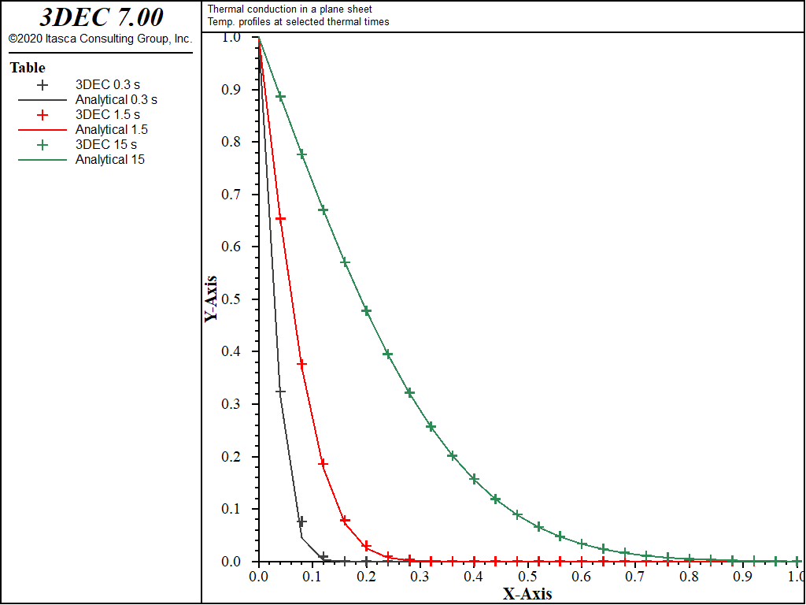
图 2：显式求解算法的温度比较（表 2、4、6 = 解析解；表 1、3、5 = 3DEC 解）。

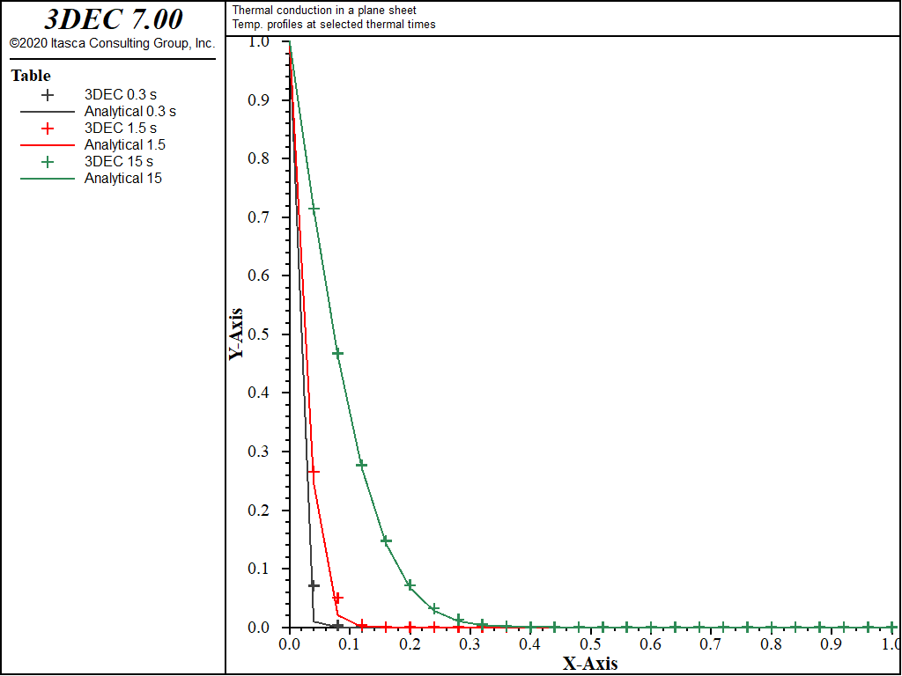
图 3：隐式求解算法的温度比较（表 2、4、6 = 解析解；表 1、3、5 = 3DEC 解）。
空心圆柱的加热
一无限长空心圆柱初始温度为恒定的 0°C。圆柱内半径处暴露于 100°C 的恒定温度，外半径处保持 0°C。问题是确定达到热学平衡状态时圆柱内的温度以及热致应力。
Nowacki（1962）给出了该问题在稳态热状态下按温度以及径向、切向和轴向应力表示的解答：
其中：
\(T\) = 温度；
\(r\) = 距圆柱中心的径向距离；
\(a\) = 圆柱的内半径；
\(b\) = 圆柱外半径；
\(T_a\) = 内半径处的温度；
\(\sigma_r\) = 径向应力；
\(\sigma_t\) = 切向应力；
\(\sigma_a\) = 轴向应力；
\(m = {3 K \alpha_t \over {\lambda + 2 G}}\);
\(\lambda = K - {2 \over 3} G\);
\(K\) 为体积模量；
\(G\) 为剪切模量；以及
\(\alpha_t\) 为线热膨胀系数。
温度与应力的解析解在 3DEC 数据文件中编为 FISH 函数。随后即可在表格中直接比较解析结果与数值结果。
本算例规定了以下物性：
几何
| 圆柱内半径（\(a\)） | 1.0 m | |
| 圆柱的外半径（\(b\)） | 2.0 m | |
| 材料属性 |
| 密度（\(\rho\)） | 2000 kg/m3 |
| 比热（\(C_p\)） | 880.0 J/kg °C |
| 导热系数（\(k\)） | 4.2 W/m °C |
| 线热膨胀系数（\(\alpha_t\) ） | 5.4 × 10−6/ °C |
| 剪切模量（\(G\)） | 28.0 GPa |
| 体积模量（\(K\)） | 48.0 GPa |
用 3DEC 对圆柱的一个薄四分之一剖分建模。图 4（Figure 4） 给出了 3DEC 网格。模型内半径指定为 100°C 的恒温边界；外半径处的温度指定为 0°C。
3DEC 模型既可按非耦合方式、也可按热-力耦合方式运行。对于热弹性分析，进行非耦合分析效率更高。通过对该问题分别运行非耦合模型和耦合模型可以说明这一点。首先以非耦合模式运行模型：先进行热学计算，达到平衡热流状态；然后计算热致力学应力。3DEC 数据文件列于 空心圆柱的加热（“hollow-cyl.dat”）（Heating of a Hollow Cylinder (“hollow-cyl.dat”)） 中。

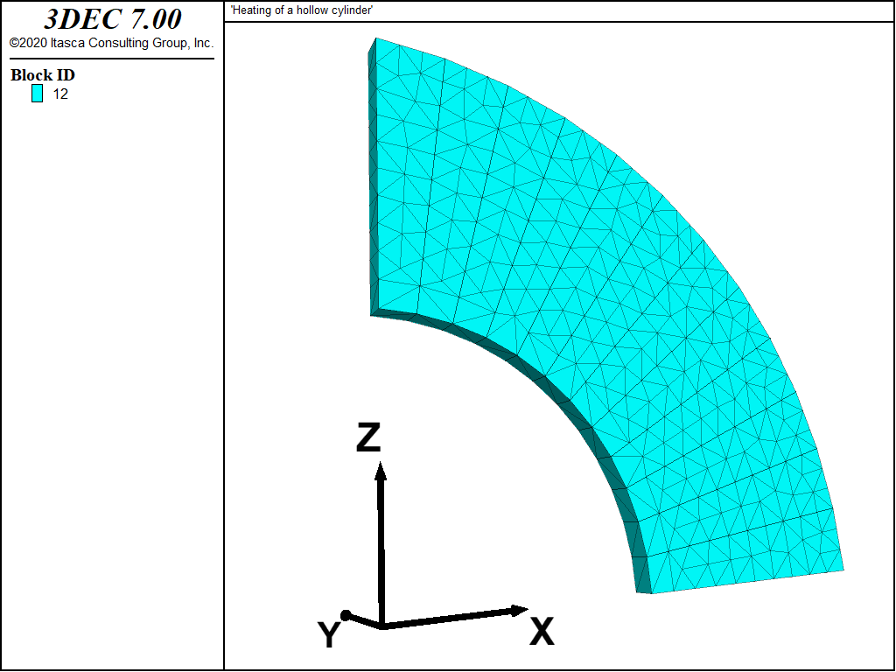
图 4：用于空心圆柱加热的 3DEC 网格。
空心圆柱的加热（“hollow-cyl.dat”）
; ---------------------------------------------------------
; 空心圆柱体受热
; ---------------------------------------------------------
model new
model random 10000
fish automatic-create off
model config thermal
model large-strain on
model title
'Heating of a hollow cylinder'
fish def cons
global c_b = 2.0 ; radius
global c_g = 28e9 ; 剪切模量
global c_k = 48e9 ; 体积模量
global c_al = 5.4e-6 ; 热膨胀系数
global t1 = 100. ; 边界温度
global oc1 = 1. / math.ln(c_b)
global oc2 = 1. / (c_b * c_b - 1.)
global oc3 = 0.5 * (c_k - c_g * 2. / 3.)/(c_k + c_g / 3.)
global c_mmu = c_g * (3. * c_k * c_al) / (c_k + 4. * c_g / 3.)
global tab1 = 1 ; 数值温度
global tab2 = 2 ; 解析温度
global tab3 = 3 ; 数值径向应力
global tab4 = 4 ; 解析径向应力
global tab5 = 5 ; 数值切向应力
global tab6 = 6 ; 解析切向应力
global tab7 = 7 ; 数值轴向应力
global tab8 = 8 ; 解析轴向应力
end
[cons]
;
; 采用棱柱块体创建四分之一圆柱体
fish def genb
local xc = 0.0
local zc = 0.0
local ya = 0.0
local yb = 0.1
local dang = math.pi / (12.0 * 2.0)
local dr = 0.1
local ri = 1.0
local re = c_b
loop local i (1, 12)
local ang = dang * float(i-1)
local angn = dang * float(i)
local rr = ri
local rrn = re
global x1 = xc + rr * math.cos(ang)
global z1 = zc + rr * math.sin(ang)
global x2 = xc + rrn * math.cos(ang)
global z2 = zc + rrn * math.sin(ang)
global x3 = xc + rrn * math.cos(angn)
global z3 = zc + rrn * math.sin(angn)
global x4 = xc + rr * math.cos(angn)
global z4 = zc + rr * math.sin(angn)
command
block create prism &
face-1 [x1] [ya] [z1] [x2] [ya] [z2] [x3] [ya] [z3] [x4] [ya] [z4] &
face-2 [x1] [yb] [z1] [x2] [yb] [z2] [x3] [yb] [z3] [x4] [yb] [z4]
endcommand
endloop
end
[genb]
block join
;
; quad 中存在一个尚未找到的错误！
;block zone gen hex div 1 1 20 ; single_quad
block zone gen edgelength 0.1
block zone cmodel assign el
block zone prop dens 2000 bulk [c_k] shear [c_g]
block contact material-table default prop stiffness-normal 1000 ...
stiffness-shear 1000
;
block zone thermal prop cond 4.2 spec-heat 880 exp [c_al]
;
block gridpoint apply vel-z 0.0 range pos-z 0
block gridpoint apply vel-x 0.0 range pos-x 0
block gridpoint apply vel-y 0.0 range pos-y 0
block gridpoint apply vel-y 0.0 range pos-y 0.1
;
block gridpoint apply temperature [t1] ...
range cyl end-1 0 -0.01 0 end-2 0 0.11 0 rad 0.99 1.01
block gridpoint apply temperature 0 ...
range cyl end-1 0 -0.01 0 end-2 0 0.11 0 rad 1.99 2.01
;
model his thermal time-total
block hist temp pos 1 0 0
block hist temp pos 1.5 0 0
block hist temp pos 2 0 0
block hist temp pos 0 0 1.5
block hist stress-zz pos 1 0 0
block hist stress-zz pos 1.5 0 0
block hist stress-zz pos 2 0 0
;
program call 'hollow-cyl.fis'
model save 'cyl-init'
; 非耦合分析
model mechanical active off
model thermal active on
model solve
;
model mechanical active on
model thermal active off
model solve ratio 1e-9
model thermal active on
[num_solt]
[ana_solt]
[num_solst]
[ana_solst]
table '1' label '3DEC Temperature'
table '2' label 'Analytical Temperature'
table '3' label '3DEC Radial Stress'
table '4' label 'Analytical Radial Stress'
table '5' label '3DEC Tangential Stress'
table '6' label 'Analytical Tangential Stress'
table '7' label '3DEC Axial Stress'
table '8' label 'Analytical Axial Stress'
model save 'cyl-ucpl'
;
; 耦合分析
model restore 'cyl-init'
model mechanical active on
model thermal active on
model mechanical substep 100
model mechanical slave on
his int 10
model cyc 1000
model solve
[num_solt]
[ana_solt]
[num_solst]
[ana_solst]
table '1' label '3DEC Temperature'
table '2' label 'Analytical Temperature'
table '3' label '3DEC Radial Stress'
table '4' label 'Analytical Radial Stress'
table '5' label '3DEC Tangential Stress'
table '6' label 'Analytical Tangential Stress'
table '7' label '3DEC Axial Stress'
table '8' label 'Analytical Axial Stress'
model save 'cyl-cpl'
图 5（Figure 5） 和 图 6（Figure 6） 比较了数值结果与解析结果。两图给出稳态下圆柱内温度和应力分布的表格曲线。所绘值均已归一化：温度除以 \(T_a\) 归一化；应力除以 \(mGT_a\) 归一化。图 5（Figure 5） 给出数值解与解析解在稳态下的温度分布，吻合很好，误差小于 0.1%。图 6（Figure 6） 给出了稳态下径向、切向和轴向应力分布结果的比较。

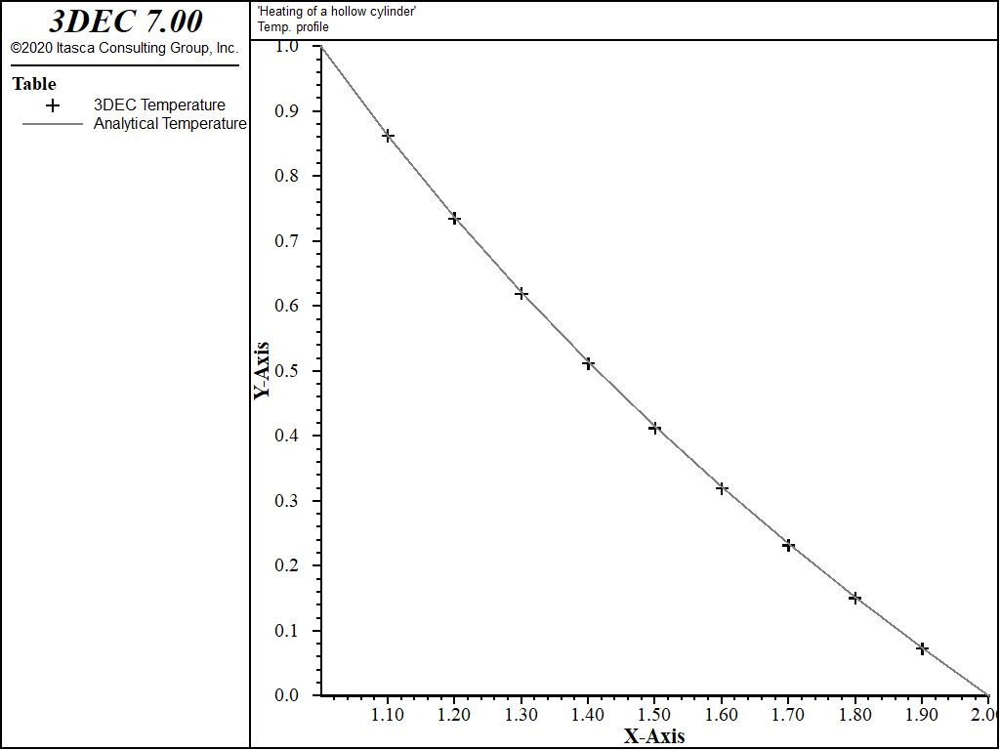
图 5：空心圆柱受热时稳态下的温度分布。

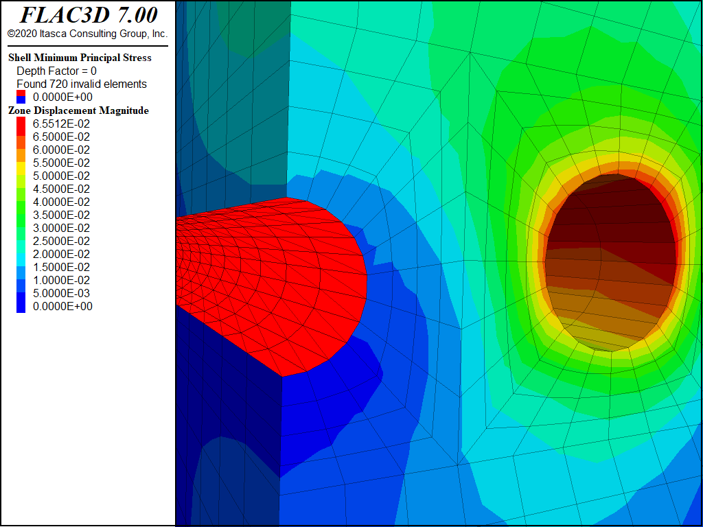
图 6：空心圆柱加热时稳态下的径向应力分布
无限介质中的无限线热源
在热物性恒定的无限弹性介质中有一恒定发热率的无限线热源。Nowacki（1962）给出了该问题温度、径向与切向应力以及径向位移的瞬态解：
其中：
\(\xi\) = {\({r^2}\over{4 \kappa t}\)};
\(r\) = 到线源的径向距离；
\(\kappa\) = \(k \over {\rho C_p}\);
\(a\) = \({q \over {k}}\);
\(b\) = \(\alpha_t \ a {9 K \over {3K + 4G}}\);
\(L\) = 单位长度；以及
\(E_1(\xi)\) = \(\int_{\xi}^\infty {e^{-u} \over {u}} du\) 为指数积分。
本算例的材料物性以及初始条件与边界条件定义如下：
材料属性
| 密度（\(\rho\)） | 2000 kg/m3 |
| 剪切模量（\(G\)） | 30 GPa |
| 体积模量（\(K\)） | 50 GPa |
| 比热（\(C_p\)） | 1000 J/kg °C |
| 导热系数（\(k\)） | 4 W/m °C |
| 线热膨胀系数（\(\alpha t\)） | 5× 10−6/°C |
| 初始条件/边界条件 |
| 初始均匀温度 | 0°C | |
| 初始应力状态 | 无应力 | |
| 线热源 |
| 单位长度能量释放（\(q\)） | 1600 W/m |
假定材料属性与温度无关，热源的热输出恒定（不衰减），且线热源为无限长。
3DEC 中该问题的网格为圆柱圆盘的 \(1 \over 192\) 径向扇区。线热源的轴线与模型的 \(y\) 轴重合。网格在 \(xz\) 平面内沿径向分级；在 \(y\) 方向上只用一层网格单元。模型见图 7（Figure 7）。用 FISH 函数（fxface.fis 文件（fxface.fis））在倾斜边界上施加滚轴边界。

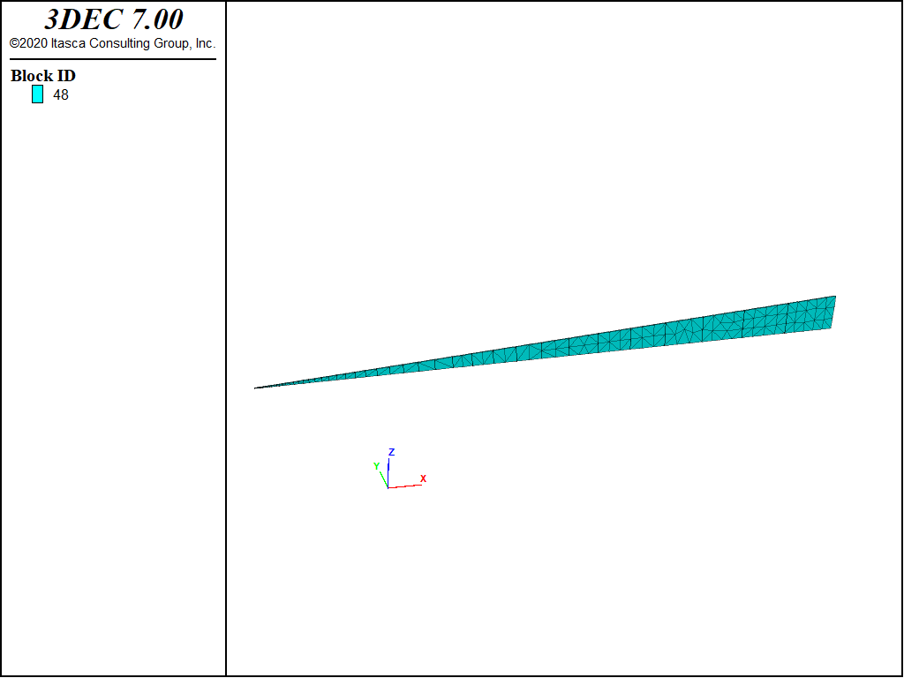
图 7：无限线热源的 3DEC 模型。
在 3DEC 中，线热源用一系列点源表示。调整点源强度 \(q_p\) 的大小，使其产生的强度与线热源 \(Q\) 等效。对于四分之一对称模型且厚度为一个网格单元的情况，\(q_p\) 与 \(Q\) 之间的关系为
其中 \(L\) = 模型中表示的线源长度。
恒定热源施加在沿 \(y\) 轴的网格点上；模型边界保持绝热，以表示热学对称平面。网格延伸至距 \(y\) 轴 500 m 处，以模拟无限域。远端边界在力学上固定；沿 \(x\) 轴和 \(z\) 轴的边界固定，以表示无剪切的对称平面。
由于材料是弹性的，建议采用非耦合分析。先用隐式求解算法把问题热学求解到 1 年（model mechanical active off），然后分步计算到力学平衡（model thermal active off 且 model mechanical active on）。对于该问题，热源产生沿某一方向的均匀运动。这种情况更适合采用组合阻尼而非局部阻尼（见 3DEC 理论与背景（3DEC Theory and Background） 中的“力学阻尼（Mechanical Damping）”专题）。3DEC 数据文件列于“无限介质中的无限线热源（Infinite line heat source in an infinite medium）”中。
把 式 (61) 至 式 (64) 中解析解的无量纲形式编为算例“无限介质中的无限线热源（Infinite line heat source in an infinite medium）”中的 FISH 函数。随后即可在表格中直接比较解析值与数值结果。温度与径向位移的解析解编在 FISH 函数 温度与位移解析解 FISH 函数（fana _soltu） 中，径向与切向应力的解析解编在 应力解析解 FISH 函数（fana _solst） 中。解析解中用到的指数积分函数编为单独的 FISH 函数，包含在文件“EXP_INT.FIS”中。温度与位移数值结果的无量纲值在 FISH 函数 温度与位移数值解 FISH 函数（fnum _soltu） 中计算，径向与切向应力的相应值在 应力数值解 FISH 函数（fnum _solst） 中计算。无量纲温度、径向应力、切向应力和径向位移的数值结果分别存于表 1、3、5、7；其解析值分别存于表 2、4、6、8。
1 年时的温度、径向位移以及径向和切向应力分布结果以表格图形式列于 图 8（Figure 8） 至 图 10（Figure 10）。温度的数值解与解析解之差小于 2%。位移和应力的对比也很好；在距热源 100 m 范围内，差异一般小于 2%。固定外边界对距热源较远处的数值结果有影响，但吻合程度仍然合理。

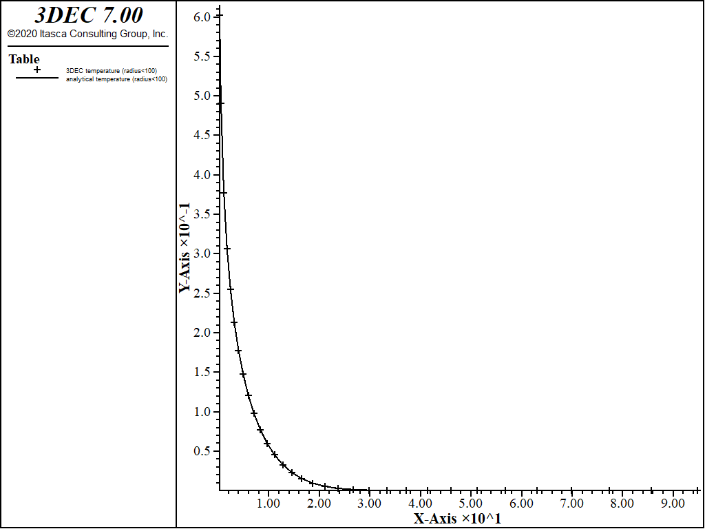
图 8：1 年时的温度分布。

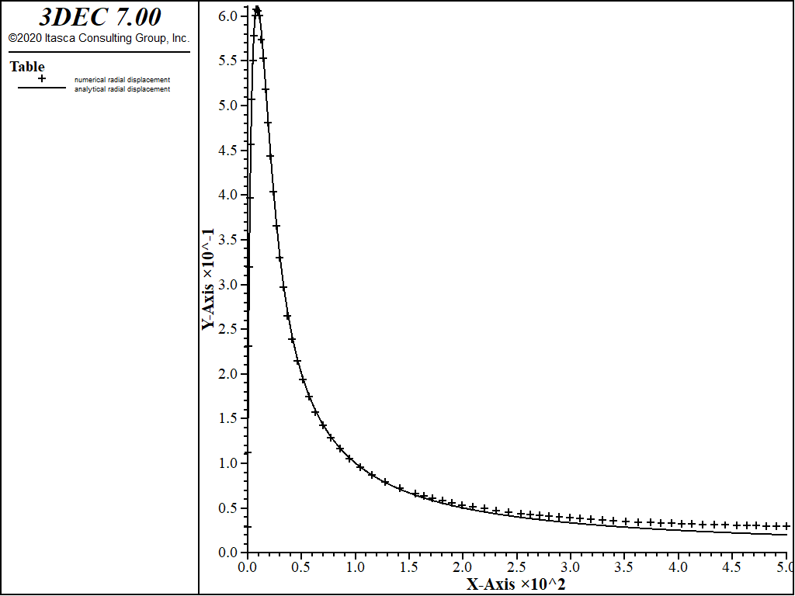
图 9：1 年时的径向位移分布。

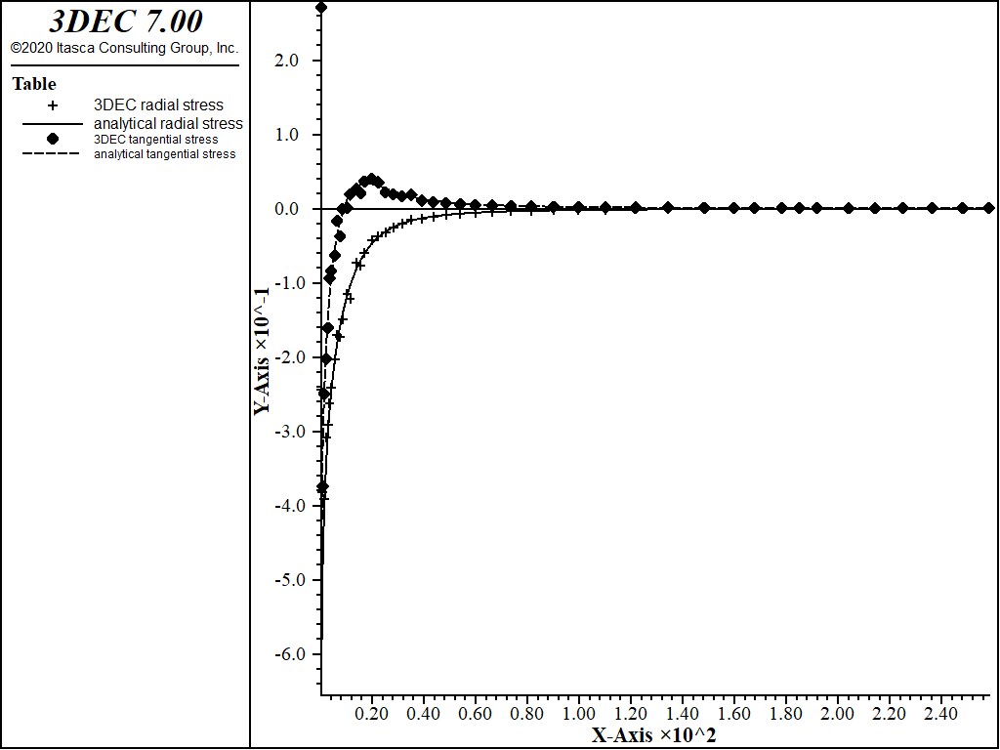
图 10：1 年时的径向与切向应力分布。
无限介质中的无限线热源
; ---------------------------------------------------------
; 无限介质中的无限长线源
;
; ---------------------------------------------------------
model new
fish automatic-create off
model config thermal
model large-strain on
model title 'Infinite line heat source in infinite elastic medium'
block tolerance 0.001
fish def gcons ; 几何常量
global n1 = 48
global n2 = 24
global y1 = 1.
end
[gcons]
fish def cons
global c_g = 3.e10 ; 剪切模量
global c_k = 5.e10 ; 体积模量
global c_al = 5.e-6 ; 热膨胀系数
global t1 = 100.0 ; 边界温度
global c_tk = 4. ; 热导率
global c_cp = 1e3 ; 比热容
global q_q = 1600. ; 线源强度
global c_density = 2.e3
local kappa = c_tk / (c_density * c_cp)
global o4c = 1. / (4. * kappa)
global o4p = 1. / (4. * math.pi)
global o8p = o4p * 0.5
local val = c_k / c_g
global c_nu = (3.*val-2.)/(6.*val+2.)
global c_eta = c_al * c_g * (1.+c_nu)/(1.-c_nu)
global a_a = q_q / c_tk
global b_b = c_eta * a_a
global c_c = b_b * 1.0 / c_g
a_a = 1. / a_a
b_b = 1. / b_b
c_c = 1. / c_c
global tab1 = 1 ; 数值温度
global tab2 = 2 ; 解析温度
global tab3 = 3 ; 数值径向应力
global tab4 = 4 ; 解析径向应力
global tab5 = 5 ; 数值切向应力
global tab6 = 6 ; 解析切向应力
global tab7 = 7 ; 数值径向位移
global tab8 = 8 ; 解析径向位移
global tab11 = 11 ; 数值温度（x<100）
global tab12 = 12 ; 解析温度（x<100）
end
[cons]
; ---- 创建几何形状 -----
fish def genb
local xc = 0.0
local zc = 0.0
local ya = 0.0
local yb = y1
global dang = math.pi / (float(n2) * 2.0)
;
local rr = 1.0
local dr = 1.0
loop local i (2,n1)
dr = dr * 1.1
rr = rr + dr
endloop
local dr1 = 500.0 / rr
;
local rrn = 0.0
dr = dr1
loop i (1, n1)
local i1 = i
local ang = 0.0
local angn = dang
rr = rrn
if i > 1
dr = dr * 1.1
endif
rrn = rr + dr
global x1 = xc + rr * math.cos(ang)
global z1 = zc + rr * math.sin(ang)
global x2 = xc + rrn * math.cos(ang)
global z2 = zc + rrn * math.sin(ang)
global x3 = xc + rrn * math.cos(angn)
global z3 = zc + rrn * math.sin(angn)
global x4 = xc + rr * math.cos(angn)
global z4 = zc + rr * math.sin(angn)
if i = 1
command
block create prism &
face-1 [x1] [ya] [z1] [x2] [ya] [z2] [x3] [ya] [z3] &
face-2 [x1] [yb] [z1] [x2] [yb] [z2] [x3] [yb] [z3]
endcommand
else
command
block create prism &
face-1 [x1] [ya] [z1] [x2] [ya] [z2] ...
[x3] [ya] [z3] [x4] [ya] [z4] ...
face-2 [x1] [yb] [z1] [x2] [yb] [z2] ...
[x3] [yb] [z3] [x4] [yb] [z4]
endcommand
endif
endloop
end
[genb]
; 切割块体，以在源附近加密网格
block cut joint-set dip 90 dip-direction 90 or 0.25 0.0 0.0
block join
block zone gen edgelength 10
block zone cmodel assign el
block zone prop dens [c_density] bulk [c_k] shear [c_g]
;
block contact material-table default prop stiffness-normal 1000 ...
stiffness-shear 1000
;
block zone thermal prop cond [c_tk] spec-heat [c_cp] exp [c_al]
;
block gridpoint apply vel-z 0 range pos-z 0
block gridpoint apply vel-x 0 range pos-x 0
block gridpoint apply vel-y 0 range pos-y 0
block gridpoint apply vel-y 0 range pos-y 1
;
; 点源强度，对应四分之一空间的 1/48
fish def ppp
ppp = 1600.0 * 0.5 / (float(n2) * 4.0)
end
block gridpoint apply source [ppp] range pos-x 0
;
model hist thermal time-total ; 或者 model his time-thermal
block hist temp pos 0 0 0
block hist temp pos 1 0 0
block hist temp pos 5 0 0
block hist temp pos 10 0 0
block hist temp pos 500 0 0
block hist dis-x pos 1 0 0
block hist dis-x pos 10 0 0
block hist dis-x pos 100 0 0
block his stress-xx pos 1 0 0
block his stress-xx pos 10 0 0
block his stress-xx pos 100 0 0
; 非耦合分析，采用隐式方法
model mechanical active off
model thermal active on
block thermal implicit on
model thermal timestep fix 500
model step 63000
model save 'ils_year0'
; 在倾角为 DANG 的平面上施加滚动边界
block gridpoint apply vel-norm 0 ...
range plane dip [dang/math.degrad] d-d 270 dist 1e-3 pos-x 0.1 500
model mechanical active on
model thermal active off
block mech damp combined
model step 40000
model save 'ils_year1'
program call "solution.fis"
[num_soltu]
[ana_soltu]
[num_solst]
[ana_solst]
table '1' label '3DEC temperature'
table '2' label 'analytical temperature'
table '3' label '3DEC radial stress'
table '4' label 'analytical radial stress'
table '5' label '3DEC tangential stress'
table '6' label 'analytical tangential stress'
table '7' label 'numerical radial displacement'
table '8' label 'analytical radial displacement'
table '11' label '3DEC temperature (radius<100)'
table '12' label 'analytical temperature (radius<100)'
model save "ils_solution"
FISH 函数——“solution.fis”
;
; 无限长线热源问题的解析解和数值解
;
program call "exp_int.fis"
fish def num_soltu
;
; 输入：tab1 - 数值温度表
; tab7 - 数值径向位移表
; tab11 - 数值温度表（半径 < 100）
;
global nn = 0
loop foreach local gp_ block.gp.list
local rad = math.sqrt(block.gp.pos.y(gp_)^2 + block.gp.pos.z(gp_)^2)
if rad < 1.e-4 then
local x = block.gp.pos.x(gp_)
if x > 1.0e-4
table(tab1,x) = block.gp.temp(gp_) * a_a
nn = nn + 1
if x < 100.0
table(tab11,x) = table(tab1,x)
endif
endif
table(tab7,x) = block.gp.disp.x(gp_) * c_c
end_if
end_loop
nn = 48
end
;
fish def ana_soltu
;
; 输入：tab2 - 解析温度表
; tab8 - 解析径向位移表
; tab12 - 解析温度表（半径 < 100）
;
loop foreach local gp_ block.gp.list
local rad = math.sqrt(block.gp.pos.y(gp_)^2 + block.gp.pos.z(gp_)^2)
if rad < 1.e-4 then
local x = block.gp.pos.x(gp_)
if x = 0.0 then
table(tab2,x) = 0.0
table(tab8,x) = 0.0
else
local e_val = x * x * o4c / thermal.time.total
local val = exp_int(e_val)
table(tab2,x) = val * o4p
table(tab8,x) = (val + (1.-math.exp(-e_val))/e_val) * x * o8p
if x < 100.0
table(tab12,x) = table(tab2,x)
endif
end_if
end_if
end_loop
end
;
fish def num_solst
;
; 输入：tab3 - 数值径向应力表
; tab5 - 数值切向应力表
;
local ns = 1
loop while ns < nn
local x = (table.x(tab1,ns) + table.x(tab1,ns+1)) * 0.5
local p_z = block.zone.near(x,0.,0.)
local xc = block.zone.pos.x(p_z)
local zc = block.zone.pos.z(p_z)
local ra2 = xc*xc + zc*zc
if ra2 # 0
local ra = math.sqrt(ra2)
table.x(tab3,ns) = ra
local zstress = block.zone.stress(p_z)
local val = (zstress->xx*xc*xc + zstress->zz*zc*zc + ...
2.*zstress->xz*xc*zc)/ra2
table.y(tab3,ns) = val * b_b
table.x(tab5,ns) = ra
val = (zstress->xx*zc*zc + zstress->zz*xc*xc - ...
2.*zstress->xz*xc*zc)/ra2
table.y(tab5,ns) = val * b_b
endif
ns = ns + 1
end_loop
end
fish def ana_solst
;
; 输入：tab4 - 解析径向应力表
; tab6 - 解析切向应力表
;
local ns = 1
loop while ns < nn
local x = (table.x(tab1,ns) + table.x(tab1,ns+1)) * 0.5
if x # 0
local p_z = block.zone.near(x,0.,0.)
local xc = block.zone.pos.x(p_z)
local zc = block.zone.pos.z(p_z)
local ra2 = xc*xc + zc*zc
if ra2 # 0
local ra = math.sqrt(ra2)
local e_val = ra2 * o4c / thermal.time.total
local val1 = exp_int(e_val)
if e_val # 0
local val2 = (1. - math.exp(-e_val)) / e_val
table.x(tab4,ns) = ra
table.y(tab4,ns) = - (val1 + val2) * o4p
table.x(tab6,ns) = ra
table.y(tab6,ns) = - (val1 - val2) * o4p
endif
endif
endif
ns = ns + 1
end_loop
end
一维导热与对流热输运
该验证问题说明稳态下正向对流和反向对流对饱和平板中传导温度分布的影响。饱和板厚度为 a、长度为 L，在 3DEC 中用一条开度为 \(a\) 的水平裂隙来模拟。该裂隙位于一个在模拟中保持绝热的块体内。定义坐标系：\(x\) 轴沿裂隙平面指向右侧，原点位于模型左边界。温度边界条件对应固定温度：\(x\) = 0 处为 \(T\)1，\(x\) = L 处为 \(T\)2。板中存在恒定的流体通量，相应于模型左侧的固定边界压力 \(P\)1 和右侧的 \(P\)2。
在稳态情况下，能量平衡方程的一维形式可表示为
其中 \(\hat T = (T - T_1)/T_1, \hat x = x/L\)，而 \(P_e\) 为问题的 Peclet 数。Peclet 数定义为
式中，\(\rho_f\) 为流体密度，\(C_f\) 为流体比热，\(q\) 为流体比流量，\(k^T_f\) 为流体导热系数。比流量由下式给出
式中，\(\mu\) 为流体黏度。
该方程的解（边界条件为 \(\hat x\) = 0 时 \(\hat T\) = 0，以及 \(\hat x\) = 1 时 \(\hat T = \hat T_2\)）为
模型属性和参数的取值列于下文。
| \(\rho_f\) | 1000 kg/m3 |
| \(C_f\) | 4200 J/kg/C |
| \(k^T_f\) | 0.6 W/m/C |
| \(\mu\) | 10−3 Pa.sec |
| \(a\) | 10−4 m |
| \(L\) | 4 m |
| \(T\)1 | 150 C |
| \(T\)2 | 130 C |
| \(P\)1 | 工况 1：0.2 Pa。工况 2：0 Pa。 |
| \(P\)2 | 工况 1：0 Pa。工况 2：0.2 Pa。 |
该模拟的 Péclet 数量级为 1.17。热通量指向右侧。共进行两次模拟：工况 1 中对流与导热方向相同（向右流动）；工况 2 为向左流动（对流与导热方向相反）。3DEC 的稳态导热-对流温度剖面与解析解在图 11（Figure 11）和图 12（Figure 12）中比较。由这些图可见，对本次模拟二者吻合很好。图中还绘出了稳态导热解（直线）。与导热解相比，流体流动的作用使温度曲线沿流动方向偏移。

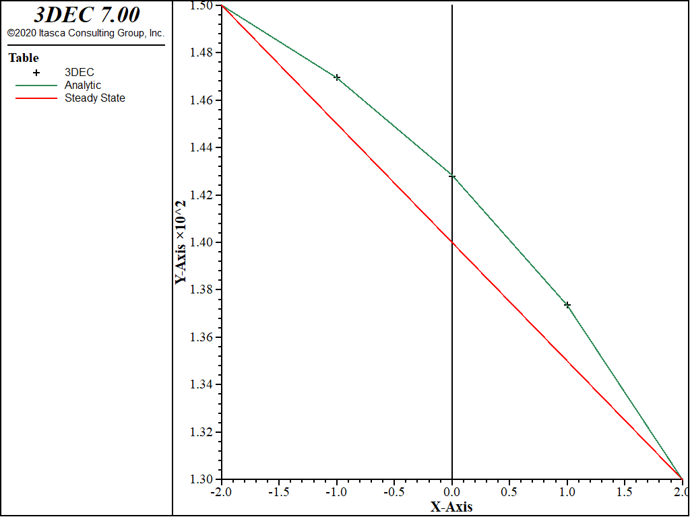
图 11：工况 1 下解析与数值温度分布，并与稳态传导解比较。

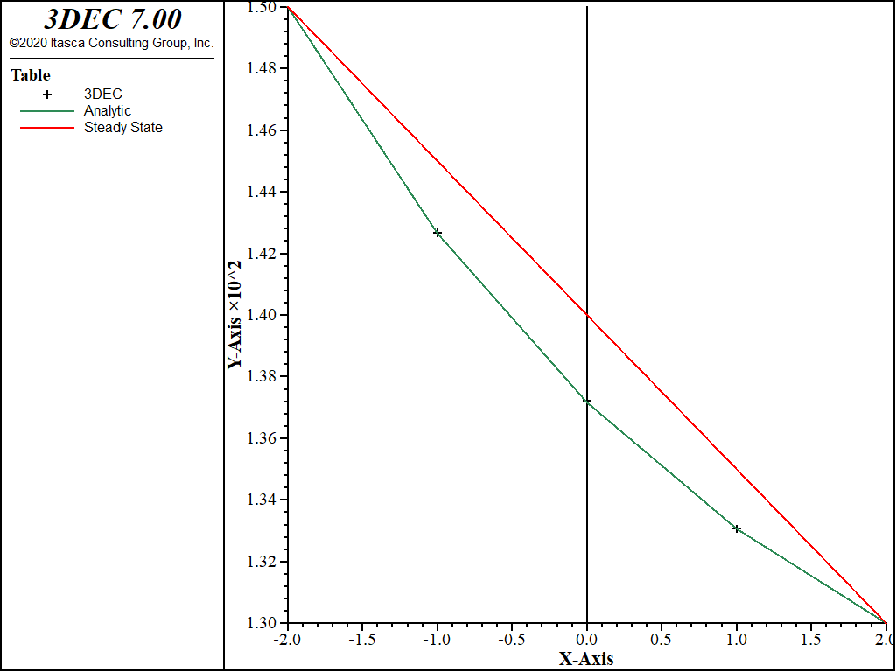
图 12：工况 2 下解析与数值温度分布，并与稳态传导解比较。
convection_conduction.dat
; 从左向右对流
model new
model title
'Conduction/advection in a fracture'
model config thermal fluid
model large-strain off
fish def setup
_rhow = 1000
_cw = 4200.0
_kt = 0.6
_visc = 1e-3
_a = 1e-4
_x1 = -2.0
_x2 = 2.0
_t1 = 150.0
_t2 = 130.0
_right = 1
; 若流动方向向左，将 _right 设为 0
; _right = 0
if _right = 1 then
_p1 = 0.2
_p2 = 0.0
else
_p1 = 0.0
_p2 = 0.2
endif
; --- 无流动、无对流时，使用：
; _p1 = 0.0
; _p2 = 0.0
;
_L = _x2 - _x1
_perm = _a^2/(12.0*_visc)
_q = -_perm*(_p2-_p1)/_L
_Pe = _rhow*_cw*_q*_L/_kt
end
[setup]
;
block create brick [_x1] [_x2] -1 1 -1 1
block cut joint-set dip 0 dip-direction 0
;
block zone generate edgelength 1.0
;
flowplane vertex prop ap-ini=[_a] ap-min=1e-5 ap-max=1e-3
block fluid property bulk=2e9 density=[_rhow] visc=[_visc]
; --- 模型的新流体参数 ---
block fluid property specific-heat=[_cw] thermal-conductivity=[_kt] ...
heat-transfer-coefficient=0
block zone cmodel assign el
block zone prop dens 1400 bulk 6e9 shear 4e9
block zone thermal prop expansion 1.0e-5 conductivity 0.2 specific-heat 800
block contact jmodel assign el
block contact prop stiffness-normal 1e9 stiffness-shear 1e9
;
model hist thermal time-total
block hist temp pos -2 1 1
block hist temp pos 0 1 1
block hist temp pos 0 -1 -1
block hist temp pos 2 1 1
; --- 流体的初始和边界温度条件 ---
flowknot initialize temp [_t2]
flowknot apply temp [_t2] range pos-x 2.0
flowknot apply temp [_t1] range pos-x -2.0
; --- 建立稳态流场 ---
block insitu p-p 0
flowknot apply p-p [_p2] range pos-x 2.0
flowknot apply p-p [_p1] range pos-x -2.0
model mechanical active off
model thermal active off
model fluid active on
model cycle 1000
; --- 运行热学模拟 ---
block thermal convection on
model mechanical active off
model thermal active on
model fluid active off
model cyc 1000
model save 'adv'
; --- 检查结果 ---
fish def _ftemp
loop foreach pnt flowknot.list
_y = flowknot.pos.y(pnt)
if _y < -0.99 then
_x = flowknot.pos.x(pnt)
_t = flowknot.temp(pnt)
table(10,_x) = _t
_xhat = (_x+2.0)/_L
if _p1 = _p2 then
term = _xhat
else
term = (math.exp(_Pe*_xhat)-1.0)/(math.exp(_Pe)-1.0)
endif
_anat = _t1+(_t2-_t1)*term
table(11,_x) = _anat
table(12,_x) = _t1+(_t2-_t1)*_xhat
end_if
end_loop
end
[_ftemp]
table '10' label '3DEC'
table '11' label 'Analytic'
table '12' label 'Steady State'
model title
'1D conduction/convection'
通过用不同的网格 Peclet 数和 Courant 数运行该数据文件，可以了解 3DEC 中所实现数值对流算法的稳定性。例如，通过改变网格密度和比流量，可导出该算法保持稳定的网格 Peclet 数和 Courant 数取值（见描述数值稳定性的 稳定性与精度（Stability and Accuracy） 一节）。
应用算例
深部裂隙中的热对流
采用 3DEC 的热-流体耦合算法分析了深部单条裂隙中的热传导和热对流。
所用属性为
| 岩石 | ||
| 密度 | 2700 kg/m3 | |
| 体积模量 | 6 × 109 Pa | |
| 剪切模量 | 4 × 109 Pa | |
| 导热系数 | 2.8 W/m/°C | |
| 比热 | 800 J/kg/°C | |
| 裂隙 | ||
| 法向刚度 | 1 × 109 Pa/m | |
| 剪切刚度 | 1 × 109 Pa/m | |
| 张开度 | 2 × 10−5 m | |
| 流体 | ||
| 密度 | 1000 kg/m3 | |
| 体积模量 | 2 × 109 Pa | |
| 黏度 | 1 × 10−3 Pa.sec | |
| 导热系数 | 0.6 W/m/°C | |
| 比热 | 4200 J/kg/°C |
流体-岩石传热系数 1、10、100 W/m2/°C。
用于模拟 4500-5000 m 深度的地应力条件为
| 竖向应力 | 10 × 106 Pa | |
| 流体压力 | 5 × 106 Pa | |
| 岩石温度 | 190 °C | |
| 流体温度 | 190 °C |
建立了一个 0.5 × 0.5 × 0.5 m 的立方体区域，裂缝位于 \(y\) = 0 的平面上。块体几何见图 13（Figure 13），块体离散见图 14（Figure 14）。

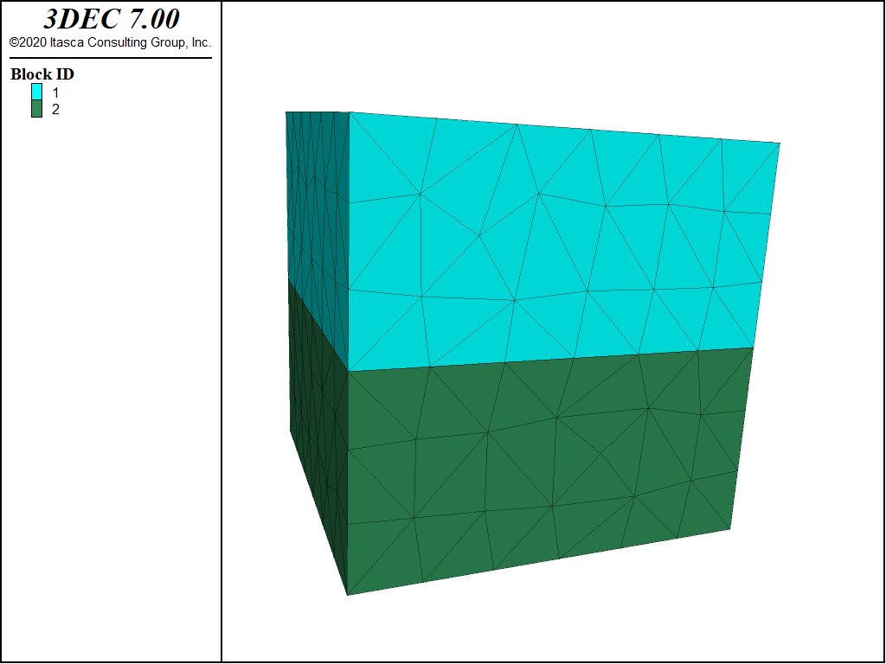
图 13：裂隙中热对流的 3DEC 块体几何。
在第一阶段，施加地应力条件，不考虑流体流动或温度梯度。在第二阶段，通过以下方式模拟地温下的流体流动：在 \(x\) = −0.25 m 的边界处向裂隙内施加 2 × 10−7 m3/s/m 的流入量，并在 \(x\) = 0.25 m 的边界处施加等量的流出量。这些边界条件在裂隙中产生 0.01 m/s 的均匀流速以及流体压力分布；二者均示于 图 14（Figure 14）。

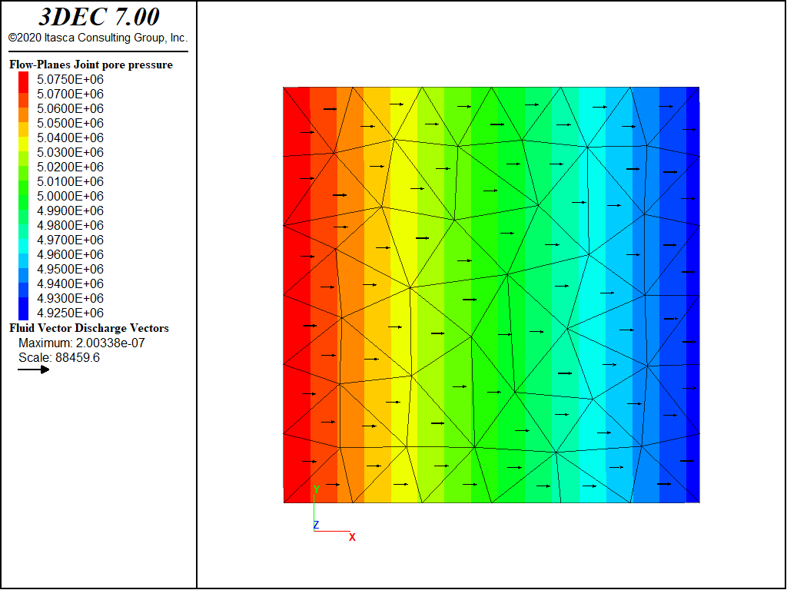
图 14：裂隙中的流速和流体压力分布。
在第三阶段，边界 \(x\) = −0.25 m 处的注入流体温度固定为 50°C。在出流边界，流体温度保持自由。模型所有外边界上的岩石温度固定为 190°C。
传热系数 \(h\) 考虑了三个取值：
- 工况 1：\(h\) = 1 W/m2/°C
此情形下流体温度沿裂缝逐渐降低，在流出边界处约为 150°C。流体温度的最终分布见图 15（Figure 15）。

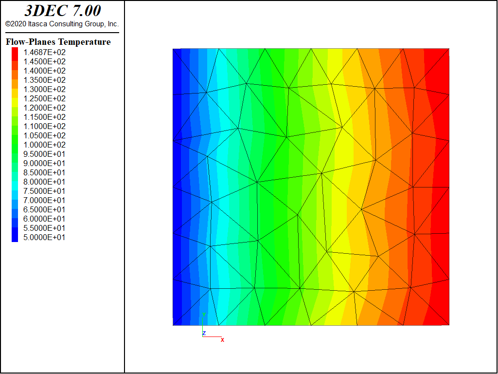
图 15：稳态时的流体温度等值线——工况 1。
沿裂缝 5 个点的流体温度历史记录见图 16（Figure 16）。沿裂缝 3 个位置的岩石温度历史见图 17（Figure 17）（采用不同的时间尺度）。由于模型边界（包括 \(x\) = 0.25 m 处的流体流出边界）上岩石温度固定为 190°C，节理中心附近的岩石温度最大降幅约为 4°C。

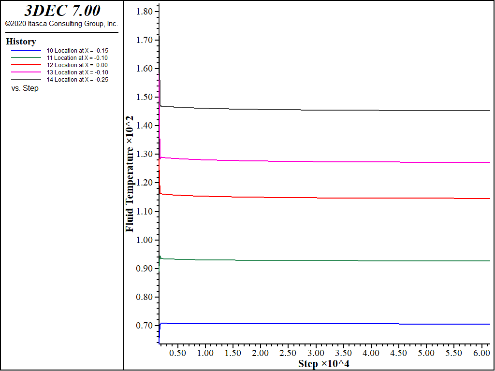
图 16：工况 1 下 5 个监测点的流体温度时程。

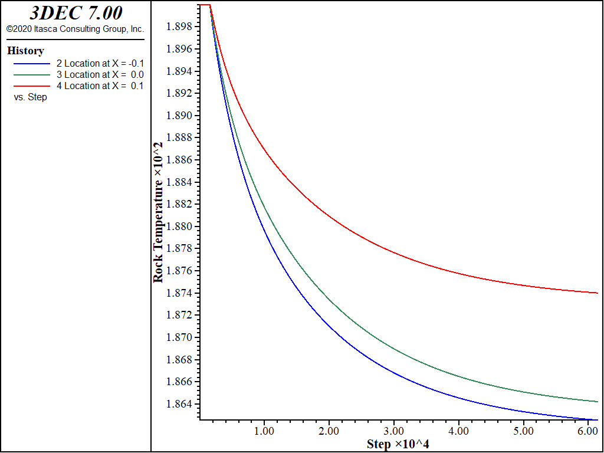
图 17：3 个监测点处岩石温度的历史记录——工况 1。
- 工况 2：\(h\) = 10 W/m2/°C
对该传热系数取值，从岩石到流体的热通量更大。流体在距流入边界不远处即趋近岩石温度 190°C。流体温度的最终分布见图 18（Figure 18）。

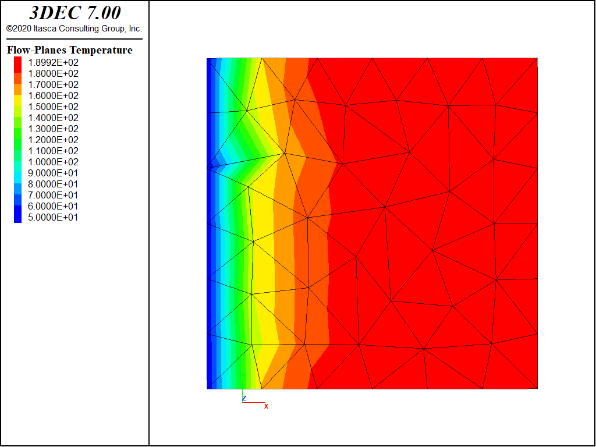
图 18：稳态时的流体温度等值线——工况 2。
沿裂隙的相同 5 个点处的流体温度时程示于 图 19（Figure 19）。沿裂隙 3 个位置处的岩石温度时程绘制于 图 20（Figure 20）。

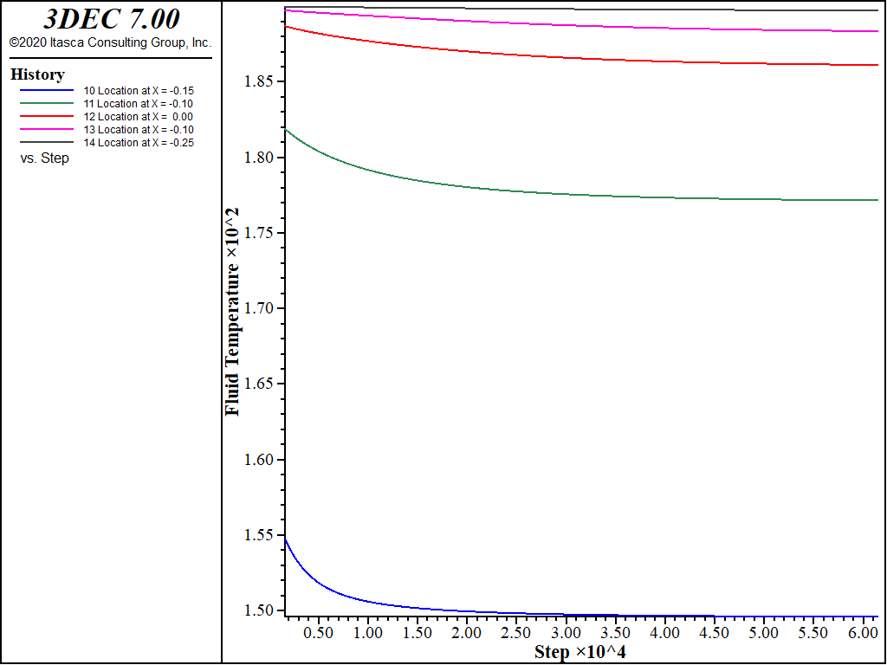
图 19：5 个监测点处流体温度的历史记录——工况 2。

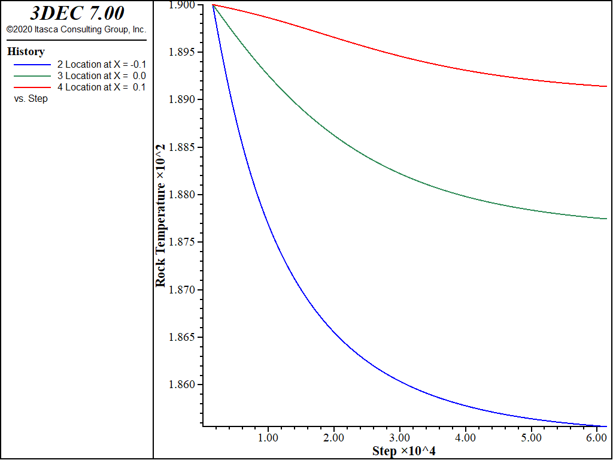
图 20：工况 2 下 3 个监测点的岩石温度时程。
- 工况 3：\(h\) = 100 W/m2/°C
传热系数取较大值会增大从岩石到流体的热通量。流体温度比前一算例更快地趋近岩石温度 190°C。流体温度的最终分布见图 21（Figure 21）。

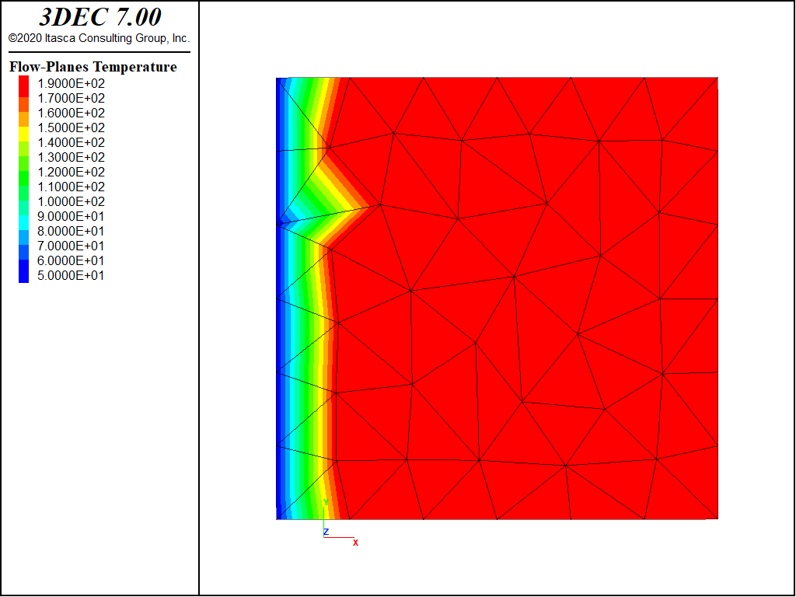
图 21：工况 3 稳态下的流体温度等值线。
沿裂缝 5 个点的流体温度历史见图 22（Figure 22），3 个位置的岩石温度历史见图 23（Figure 23）。（注意所有模型边界上岩石温度保持 190°C。）

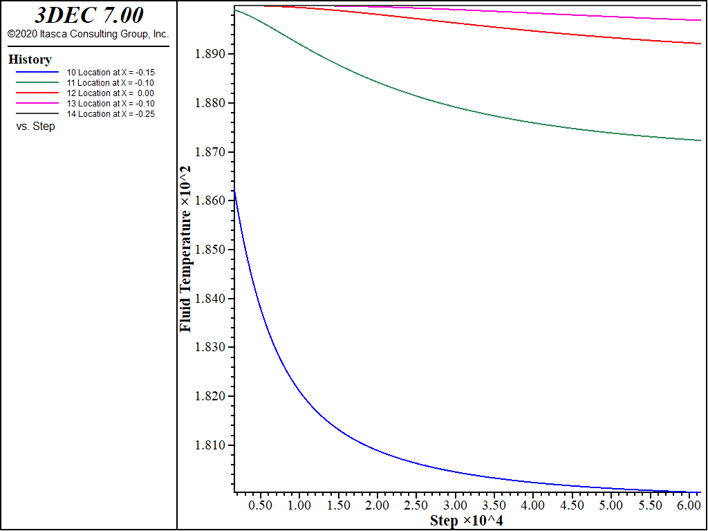
图 22：工况 3 下 5 个监测点的流体温度时程。

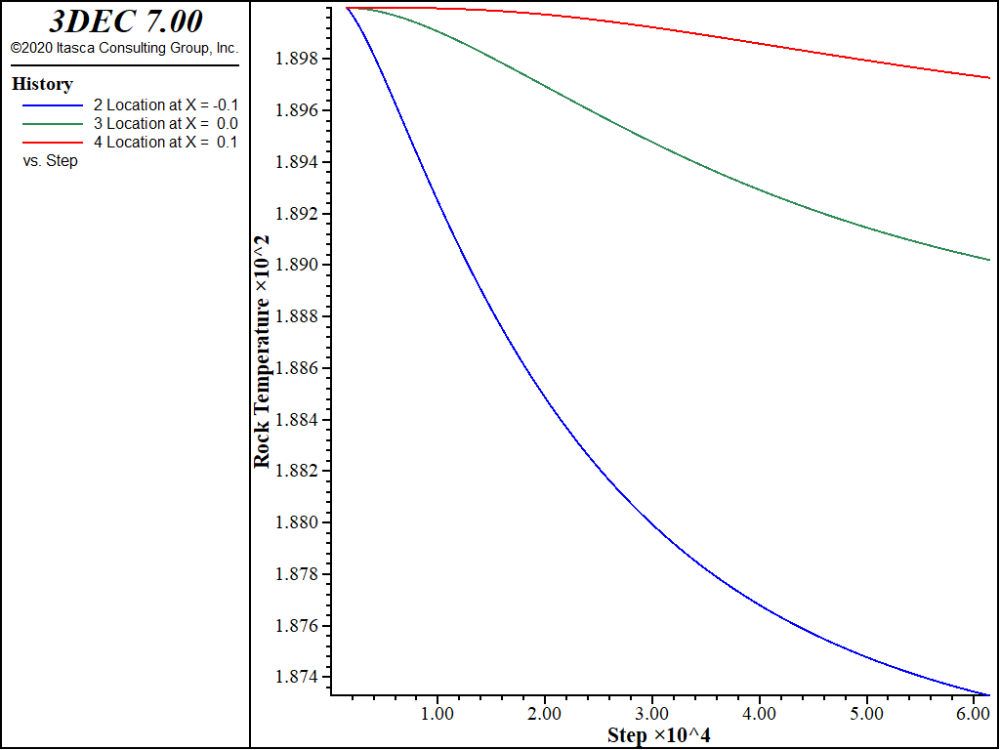
图 23：工况 3 下 3 个监测点的岩石温度时程。
数据文件
model new
; ---------------------------------------------------------
; 双块体试验，流体与岩石之间的热交换
; 计算域：5.00x5.00x5.00 m
; 深度：z=0 对应埋深 4750 m
; ---------------------------------------------------------
model config thermal fluid
model large-strain off
;
block create brick -0.250 0.250 -0.250 0.250 -0.250 0.250
block cut joint-set dip 0 dip-direction 0 or 0 0 0
block zone generate edgelength 0.08
;
; 节理／流体参数
flowplane vertex property aperture-initial 1e-4 ...
aperture-minimum 2e-5 aperture-maximum 1e-3
block fluid property bulk 2e9
block fluid property density 1000
block fluid property viscosity 1e-3
; --- 流体热学参数 ---
block fluid property specific-heat 4200.0
block fluid property thermal-conductivity 0.6
block fluid property heat-transfer-coefficient 10
;
;
;
; 岩石参数
block zone cmodel assign elastic
block zone property density 2700 bulk 6e9 shear 4e9
block zone thermal property expansion 1.0e-5 ...
conductivity 2.8 specific-heat 800
block contact jmodel assign mohr
block contact property stiffness-normal 1e9 stiffness-shear 1e9
;
; --- 岩石温度的初始条件和边界条件 ---
block gridpoint initialize temperature 190
block gridpoint apply temperature 190 range position-x -0.25
block gridpoint apply temperature 190 range position-x 0.25
block gridpoint apply temperature 190 range position-y -0.25
block gridpoint apply temperature 190 range position-y 0.25
block gridpoint apply temperature 190 range position-z -0.25
block gridpoint apply temperature 190 range position-z 0.25
;
; --- 初始流体温度 ---
block insitu fluid-temp 190
; --- 原位应力和流体孔隙压力 ---
block insitu stress 0 0 -10e6 0 0 0
block insitu pore-pressure 5e6
; --- 力学边界条件 ---
block face apply stress 0 0 -10e6 0 0 0 range position-z .24 .26
block gridpoint apply velocity-x 0 range position-x -0.25
block gridpoint apply velocity-x 0 range position-x 0.25
block gridpoint apply velocity-y 0 range position-y -0.25
block gridpoint apply velocity-y 0 range position-y 0.25
block gridpoint apply velocity-z 0 range position-z -0.25
; --- 历史 ---
model history thermal time-total
block hist temp pos -0.1 0.0 0.0 ;hist2
block hist temp pos 0.0 0.0 0.0 ;hist3
block hist temp pos 0.1 0.0 0.0 ;hist4
block history displacement-z position 0.0 0.0 0.250
block history stress-yy position 0.0 0.0 0.0
history name '2' label 'Location at X = -0.1'
history name '3' label 'Location at X = 0.0'
history name '4' label 'Location at X = 0.1'
; --- 初始状态 ---
model cycle 500
;
model save 'thf4a'
;
; --- 均匀温度下的流体流动 ---
; 流体流动的边界条件
; 缝宽 = 2e-5 m
; 速度 = 1e-2 m/s
; 流量 = 2e-7
;
flowplane edge apply discharge 2e-7 range position-x -.251 -.249
flowplane edge apply discharge -2e-7 range position-x .249 .251
;
model fluid active on
model thermal active off
model mechanical active on
;
flowknot history pore-pressure position 0 0 0
flowknot history pore-pressure position 0.250 0 0
flowknot history pore-pressure position -0.250 0 0
;
model cycle 1000
flowknot history temperature position -0.150 0 0
flowknot history temperature position -0.100 0 0
flowknot history temperature position 0 0 0
flowknot history temperature position 0.100 0 0
flowknot history temperature position 0.250 0 0
history name '10' label 'Location at X = -0.15'
history name '11' label 'Location at X = -0.10'
history name '12' label 'Location at X = 0.00'
history name '13' label 'Location at X = -0.10'
history name '14' label 'Location at X = -0.25'
history interval 200
model save 'thf4b'
;
; --- 热流耦合 --- h = 1 ---
model title 'fluid/rock heat transfer h = 1.0'
; 热流耦合边界条件
; 固定 x=-0.250 处的温度
flowknot apply temperature 50 range position-x -0.25
; 换热系数 h
block fluid property heat-transfer-coefficient 1.0
; 仅进行热学分析
; 保持流动和应力不变
model fluid active off
model thermal active on
model mechanical active off
; 设置流体与岩石之间的热相互作用
block thermal convection on
;
model cycle 60000
model save 'thf4_h1'
;
; --- 热流耦合 --- h = 10 ---
model restore 'thf4b'
model title 'fluid/rock heat transfer h = 10.0'
; 热流耦合边界条件
; 固定 x=-0.250 处的温度
flowknot apply temperature 50 range position-x -.25
; 换热系数 h
block fluid property heat-transfer-coefficient 10.0
; 仅进行热学分析
; 保持流动和应力不变
model fluid active off
model thermal active on
model mechanical active off
; 设置流体与岩石之间的热相互作用
block thermal convection on
model cycle 60000
model save 'thf4_h10'
;
;
; --- 热流耦合 --- h = 100 ---
model restore 'thf4b'
model title 'fluid/rock heat transfer h = 100.0'
; 热流耦合边界条件
; 固定 x=-0.250 处的温度
flowknot apply temperature 50 range position-x -.25
; 换热系数 h
block fluid property heat-transfer-coefficient 100.0
; 仅进行热学分析
; 保持流动和应力不变
model fluid active off
model thermal active on
model mechanical active off
; 设置流体与岩石之间的热相互作用
block thermal convection on
model cycle 60000
model save 'thf4_h100'
;
program return
| 这些内容对您有帮助吗？… | FLAC3D © 2019, Itasca | 原文更新于 2020 年 10 月 8 日 |